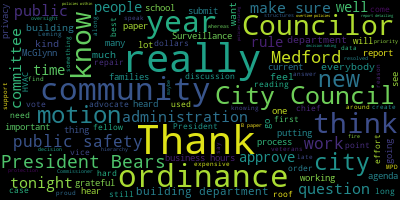
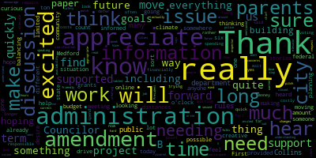
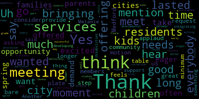
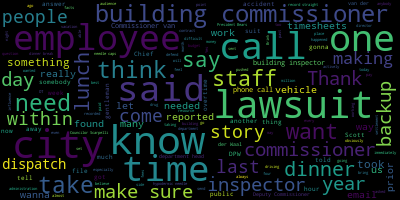

AI-generated transcript of City Council 01-14-25
English | español | português | 中国人 | kreyol ayisyen | tiếng việt | ខ្មែរ | русский | عربي | 한국인
Back to all transcripts
[SPEAKER_37]: Test one, two.
[Hurtubise]: The first regular meeting of the Medford City Council will come to order. Mr. Clerk, please call the roll.
[SPEAKER_19]: Councilor Collins. Councilor Lazzaro. Councilor Leming. Councilor Scarpelli. Councilor Tseng.
[Hurtubise]: Please rise for the Pledge of Allegiance. Okay, this is the five to seven minutes a year when I get the honor of presiding over council meetings. And the whole time I'm presiding over the council meetings, I'm saying, please get this gavel out of my hand. So let's go. 25001, election of a city council president for 2025. May I have nominations for the city council president for 2025? Councilor Collins. Councilor Collins has nominated Councilor Bears. Is there a second? Councilor Tseng has seconded the nomination. Councilor Bears, do you accept? Councilor Bears has accepted. Is there a motion to close nominations? Councilor Tseng has moved to close nominations. Is there a second? unanimous second. I had Councilor Collins first. All in favor of closing nominations. Okay, on the matter of electing a president of the Council for 2025, Councilor Bears is the only nominee. Mr. Clerk, please call the roll.
[SPEAKER_19]: Councilor Bears? Present. Councilor Callahan? Yes. Councilor Collins? Yes. Councilor Lazzaro, Councilor Leming, Councilor Scapelli, Councilor Tseng.
[Hurtubise]: On a roll call vote of six in favor, zero opposed and Councilor Bears voting present. Councilor Bears is elected council president for 2025. Congratulations. Please come up and I'll administer the oath of office. I, Isaac B. Zack Bears, do solemnly affirm that I will faithfully and impartially discharge and perform all the duties
[Bears]: upon me as President of the Medford City Council, as President of the Medford City Council, according to the best of my ability, according to the best of my ability, and understanding, and understanding, agreeable to the rules and regulations of the Constitution, agreeable to the rules and regulations of the Constitution, the laws of this Commonwealth, the laws of this Commonwealth, and the ordinances of the City of Medford, and the ordinances of the City of Medford.
[Hurtubise]: President, congratulations. Thank you.
[Bears]: I just want to thank my colleagues for the honor of serving as President. Thank you.
[Hurtubise]: While President Bears is signing his oath of office. Uh, paper number 25-002, election of a city council vice president for 2025. Are there nominations? Councilor Callahan. Councilor Callahan is nominated. Councilor Collins. Is there a second? Councilor Tseng has seconded. Councilor Collins, do you accept nomination? Are there any further nominations? Seeing none, is there a motion to close nominations? Councilor Tseng has moved to close nominations. Councilor Callahan second. All in favor of closing nominations? Opposed? Nominations are closed. On the nomination of Councilor Kit Collins to be Council Vice President for 2025, Mr. Clerk, please call the roll.
[SPEAKER_19]: Councilor Bears. Kit Collins. Councilor Callahan. Kit Collins, yes. Councilor Collins. Present. Councilor Ziaro. Kit Collins. Councilor Leming. Councilor Scapelli. Kit Collins. Councilor Tseng. Kit Collins.
[Hurtubise]: On a roll call vote of six in favor, zero opposed and Councilor Collins voting present. Councilor Collins has elected Council Vice President for 2025. Congratulations. Come on up and I'll administer the oath.
[Collins]: I, Kit Collins, do solemnly affirm that I will faithfully and impartially discharge and perform all the duties upon me, incumbent upon me, as vice president of the Medford City Council, as vice president of the Medford City Council, according to the best of my ability, according to the best of my ability, and understanding, and understanding, agreeable to the rules and regulations of the Constitution, agreeable to the rules and regulations of the Constitution, the laws of this Commonwealth, the laws of this Commonwealth, and the ordinances of the City of Medford, and the ordinances of the City of Medford.
[Hurtubise]: Congratulations, Madam Vice President. Thank you.
[Collins]: I would also like to thank my colleagues for their collaboration and working with me this past year and the one ahead. Thank you.
[Bears]: 25003 offered by Vice President Collins, resolution to adopt the standing committee rules from the prior year. Be it resolved that the standing committee rules be adopted as the standing rules of the city council insofar as they're applicable. Vice President Collins.
[Collins]: Thank you, President Bears. This is a standard top of the year motion to make sure that the rules governing this body for the previous year are still in effect for the year ahead. I motion to approve.
[Bears]: on the motion of vice president comes to approve seconded by Councilor Tseng all those in favor. I oppose the motion passes to 5004 offered by Councilor Collins, be it resolved that the city council transfer all papers and committee or on the table from the 2024 Council to the 2025 Council vice president Collins.
[Collins]: Thank you, President Bears. This is another standard resolution for the beginning of the calendar year to make sure that all papers that were in committee of the whole and any of the city council committees remaining committee for our discussion and perusal this calendar year motion to approve on the motion of Vice President Collins to approve seconded by Councilor Tseng all those in favor.
[Bears]: opposed the motion passes announcements accolades remembrances reports and records to 5008 offered by councillor Scarpelli be it resolved that the Medford City Council send our deepest condolences to the family of john granada john was a lifelong resident of the city of medford where he raised his amazing family mr granada worked and retired from the Middlesex Sheriff's Department Mr. Granada volunteered for so many projects for a great city that there are too many to list, but a few come to mind. His work with the veterans of the American Legion Program honoring our vets on Veterans Day with this program at the Oak Grove Cemetery. He and the Granada family created and ran the nonprofit pancreatic cancer awareness program, Granada Scary Trust that raised over $1 million over many years for cancer research. Councilor Scarpelli.
[Scarpelli]: Thank you. Thank you, Mr. President for allowing me the opportunity to speak on uh, true legend here in Medford. Um, when we know that Mr. Granada has been fighting a good fight for some time now. Um, but when, uh, we sure when God came calling this past week, um, we knew he now has one of the best people Medford ever had to offer to sit by his side. Um, Mr. Granada was so entrenched in our community and had so much love and passion for the city that I remember the time when I first started the option of running for school committee, I had to go sit with Mr. Granara to get his blessing. Not for the fact that he was the God, but it was so important to get his blessing so he can talk to you and explain to you what it truly meant to be an elected official in Medford. He made me understand that the reason why we become elected officials is the work that you are doing for the community, for the residents of the city, not for yourself, not for yourself, anything to gain any self-worth or for you personally, but what's best for the community. I think that when you first hear some of the things, I know that people don't know this, but Mr. Granara was a major factor in the Middlesex Sheriff's Offices and Trevor Katushin wrote this past week. It is with a heavy heart that I must inform you all the former Special Sheriff John Granara Esquire has passed away. Our thoughts and prayers are with his entire Granara family during this difficult time. A graduate of Matanon High School, Boston College, Suffolk University Law School, John Granara served the MSO with distinction in the highest levels. He began as the MSO's Chief Legal Counsel in March 1997, serving until 2009 of August. when he was appointed as Special Sheriff. Following the passing of the Sheriff Jimmy DePaulo in November of 2010, Special Sheriff Granara ably ran this agency until the appointment of Sheriff Katushin. Providing leadership at the pivotal time for the Middlesex Sheriff's Office, he was an invaluable source of knowledge, leadership, and friendship to me and many others throughout his tenure. It was our great privilege to have him remain as a Special Sheriff until August of 2011. John's legacy is public service included his time in the method school committee from 74 to 77 and his election to the Massachusetts House of Representatives in 76 representing his beloved hometown of Medford. In his memory, the half the flags in Middlesex jails were all lowered to half staff. Um, I know I read council bears read a few things that Mr. Granada did, but he did every He did more than people even knew. There was a lot of things, whether it's a celebration parade in Medford, whether it's supporting different programs that no one knew about, it was Mr. Granauer that did the work behind the scenes. And he kept a tradition that I thought was so valuable and so needed for our veterans that I believe it was, I said Memorial Day, but I believe it's Memorial Day, not Veterans Day, I believe. that working together with the members of the American Legion and the Elks, they would have our presentation and he would set a day of remembrance that you had to be there, you couldn't miss. So he was a special individual and someone that this city will miss, but if you've known John Granara, please share a story. Don't let his, his work fade away. Let that name stick with you, because this is what the city is lacking today. The reason why you see such divide is because people like John Granara aren't here to bring these groups together. So to the Granara family, we send our deepest condolences, and I'd love to, if we can, leave this meeting in his honor, Mr. President, and thank you for the time.
[Bears]: Thank you. Thank you. Thank you. Thank you. Thank you. Thank you. Thank you. Thank you. Thank you. Thank you. Thank you. Thank you. Thank you. Thank you. Thank you. Thank you. Thank you. Thank you. Thank you. Thank you. Thank you. Thank you. It resolved that the Medford City Council send our deepest condolences to the family of Ralph Evangelista. Ralph leaves his wife, Loretta, and two daughters, Julianne, and former City and School Department employee, Lisa Evangelista. Councilor Scarpelli.
[Scarpelli]: Thank you, Mr. President. Another long time battle. Mr. Evangelista fought hard to be there for his loving wife and his two daughters, like he's always been. And unfortunately, He was taken from us and hopefully is resting in peace now. I know that the Evangelista family worked so hard, especially Julianne and Lisa. We all know Lisa, who's worked for the city for many, many years. I'd like to say she ran the city while Mike McGlynn was the mayor for those many, many years, and then moved over to the school department for many years. and I know that he will be missed and we just share our condolences with Evangelista family, so thank you.
[Bears]: Thank you, Councilor Scarpelli. On the motion of Councilor Scarpelli, seconded by. Seconded by Councilor Tseng. All those in favor? Opposed? The motion passes. Records. The records of the meeting of December 17th, 2024 were passed to Councilor Tseng. Councilor Tseng, how did you find those records?
[Scarpelli]: I found them in the ordering.
[Bears]: On the motion to approve by Councilor Tseng, seconded by. Seconded by Councilor Lazzaro, all those in favor? Opposed? Motion passes. Reports of committees, 24-511 offered by Councilor Bears, Committee of the Whole, December 17th, 2024. Sure. Sorry about that. On the request of Councilor Scarpelli, we're gonna take a moment of silence on the two condolences. Everyone could please rise. Thank you. On the reports of committees, we have paper 24511, which is a committee of the whole to discuss and caucus for council leadership for the year. 2025. We just held those votes earlier in this meeting. Is there a motion to approve? A motion approved by Councilor Collins, seconded by Councilor Callaghan. All those in favour? Opposed? Motion passes. 24-006, Committee of the Whole, December 18, 2024.
This was on the update to the 2024-2025 Council Governing Agenda. which we went through in pretty, was a very detailed meeting. And is there a motion on that? On the motion to approve by Councilor Callahan, seconded by Vice President Collins. All those in favor? Opposed? Motion passes. We had one committee report left off. Is there a motion to take it under suspension?
[Collins]: Motion to take from suspension the report of the Governance Committee on January 7th,
[Bears]: On the motion of Vice President Collins to suspend the rules to take paper 24468 under suspension, that's the governance committee report January 7 2025, seconded by seconded by Councilor Tseng all those in favor. I oppose motion passes Councilor say, there we go.
[Tseng]: On Tuesday, January 7, we met as the governance committee to discuss the communications from the mayor and the receipt of the draft of the charter study committee's recommendations as sent to us and modified by the mayor's office. We talked at that meeting generally about how we wanted to structure the charter review process going forward. One slight, for folks watching at home, what the city charter is, our city constitution, it sets the foundation of how our city government works. And at that meeting, we laid out a roadmap for the next three meetings at which we'll have the call-in center there to help us understand the policy material, work with our ideas, with the ideas of the Charter Study Committee, and to create a draft that we can vote out of the committee by hopefully the end of February or early March. That way we can get it to the state house and get it before the voters this fall. Being very quick, because I think this is a good opportunity to let the public know about how we're structuring these meetings. We've decided that on Wednesday, January 22nd, the governance committee will work on issues related to the legislative branch. If folks at home are following along with the process, the draft is there. We'll be talking about the preamble, article one. Incorporation Short Title Definitions, Article 2, the legislative branch, and a section of Article 9, which also touches on the legislative branch. Speeding through, Tuesday, February 4 will be the second substantive meeting on the city charter, at which we'll discuss Articles 3 about the executive branch to the mayor's office, Articles 5, 6, and 7 about administrative organization, financial procedures, and elections. At our last scheduled substantive meeting on Wednesday, February 19th, we will be talking about the school committee. We'll also be reaching out to relevant stakeholders for their feedback as well. We'll be talking about citizen participation mechanisms, general provisions, and transitional provisions as well. Thank you.
[Bears]: Thank you, Councilor Tseng. On the motion of Councilor Tseng to approve the committee report, seconded by? Seconded by Vice President Collins. All those in favor? Opposed? Motion passes. Refer to committee for further discussion. 25-005 offered by Councilor Sagan, Councilor Leming. Whereas most of Medford's financial electoral personnel assessment and other information is not readily available for bulk analysis. Whereas analysis of such data would advance the City Council's goals of greater transparency and resident participation by allowing the city staff and residents to share and analyze data. Be it resolved that Medford create a system for residents to engage with data collected by the city of Medford and collaborate with city partners on policy development. Be it further resolved that this resolution be referred to the Resident Services and Public Engagement Committee, whereas this is in the refer to committee for further discussion section, I will entertain a brief summary before this goes to committee for the discussion, Councilor Tseng.
[Tseng]: Thank you. I'll be brief about this. This is something that I know a few candidates ran on in the last election. When we think about democracy in the 21st century, we think about the challenges. We understand that to build trust, we must pursue a policy of transparency. And I believe an open data policy will make data more accessible to our residents to understand what's shaping our policy debates in the city and how they can contribute to that debate as well. I believe that pursuing an open data policy is in a proactive spirit. I hope that we can come to answer questions with residents before they get to different levels as soon as possible. And I believe that this maximally leverages opportunities for us to collaborate, for policymakers in this building to collaborate with our residents. We know that there's so many bright minds here in Medford. We know that there's so many people eager to help us out on solving the big challenges that we're facing as a city, and that we can all work better together when this data is out there for people to use at home. Chief among our priorities with crafting an open data policy will also be privacy and security, which we know will be a challenge in the next four years coming up.
[Bears]: Thank Councilor Tseng on the motion of Councilor Tseng to refer to the resident services and public engagement committee seconded by Councilor Leming Councilor Leming.
[Leming]: Thank you. So I'm a data scientist by trade. And whenever I communicate with residents and add an email, I usually like to run some numbers. I often look at historical housing prices and things like that that come from the state data bank. And whenever I try to bring any of that data Whenever I try to bring my eye over to the city, it's always a bit of a challenge. If you go on the elections website, for instance, they do release historic elections data, but it's all in kind of PDFs. It's occasionally a Google spreadsheet. It's all very inconsistent. If I try to look at historical data from the assessor's office, it is all available. In a website if you want to look up a particular address, but if you want to do bulk analysis of the trends find the average price find the average assessed price of a certain neighborhood, for instance, that state is very difficult to come by, even though it is available within the assessor's office. So this is a way to inform discussions among residents as well as department heads and city staff when they're making these sort of decisions. It's a way to make all of our decisions a lot more numbers driven by making data from different apartments accessible in a format that is easiest to analyze. So I'm personally very excited about this. I'm very excited to get into the weeds about this in committee and I look forward to the discussion in the coming months about it.
[Bears]: Thank you. On the motion, all those in favor? Aye. Opposed? The motion passes. Vice President Collins.
[Collins]: President Bears, I would motion to suspend the rules and take the following papers out of order, 25006, 24510, 24-502, and 23-055.
[Bears]: On the motion to suspend the rules to take papers to 5006 to 4510 to 4502 and 23-055 seconded by seconded by Councilor Tseng all those in favor. Opposed. Motion passes to 5006 resolution to support families of youth with disabilities offered by Councilor Leming and Councilor Callahan. Whereas youth with disabilities need support during their developmental years, whereas parents of youth with disabilities are under supported and often have often have to go outside municipalities to find programs for their kids. And whereas after school programs are rare in Medford and those support that support youth with disabilities are non existent. Be it resolved that the Bedford City Council strongly encourage the administration to prioritize these members of our community by finding a way to quickly set up programs that meet their specific needs. Be it further resolved that the City Council listen to the comments of parents of youth with disabilities on their own experiences in finding support. Councilor Leming, and then I'll go to Councilor Callahan.
[Leming]: Thank you, President Bears. Before I was in public office and about six months after, I was a mentor for a very wonderful charity called Partners for Youth with Disabilities. It's basically like a big brother, big sister kind of a program, except it's for youth who have a number of disabilities. I was working with a kid in Somerville who was on the spectrum, and it was also something that I studied a little bit more abstractly in grad school. Working with him, we met up usually once a week. I understood the challenges that not only these kids go through, but also their parents, as well as the amount of extra support that kids with disabilities need. And very recently, Councilor Callahan and I, as well as you, Council President Bears, were approached by a group of parents of kids and teenagers with disabilities who had been advocating for years for more city support for their kids. Oftentimes they just wanted to have a group that would let them meet up after school to play board games, or really do any kind of socialization to get them out of the house, any kind of support. And so the purpose of this resolution is to first give these parents, a number of whom are here tonight to speak about their experience, to give them a platform to talk and make public some of the challenges they've been through over the years, and also to prioritize some staff support for their kids during budget season. It could come through increased support to the Medford Recreation Department. It could come through other positions, but I'll stop talking because I'm looking forward to what they have to say. Thank you. Thank you, Councilor Leming.
[Bears]: Councilor Callahan.
[Callahan]: Thanks so much. I really do. First of all, I appreciate the time of these parents, you know, having heard a lot of their stories. And as you will all hear today. I think, you know, it really is. They are in a situation of really needing to be supported and needing to be supported in their own city and not to have to drive like long distances to get to somewhere that they can get the support they need. I'm excited to work with them as parents. I hope also that we can find someone in the community who is not one of these parents to like help us to really sort of move forward on this issue. I'm excited to work with the administration, and to really be creative in thinking about the ways that we can support them as quickly as possible. And, you know, we've been in these discussions so we've been in this administration already with these discussions so we're moving forward. And I'm really excited to hear from them, and excited to. get them what they need quickly and in the long term, making sure that that's something that is going to be, you know, a long term thing in the city of Medford that they can count on. Thanks.
[Bears]: Thank you, Councilor Callahan. And before we hear directly I just want to say thank you to Trisha and all the parents. who've been working on this for years. I want to thank former school committee member McLaughlin who's here with us tonight and who has been a voice on the school committee as well. And I want to acknowledge this is the second night in a row that a lot of parents have turned out. They were at school committee last night and we saw, I think, some significant progress last night with some investments in programming that parents have really been asking for. And that quite frankly would not have been possible if we didn't have the supplemental budget. from the override and I think prioritizing these investments was one of the reasons that we did that. And I really want to thank everyone who advocated and also the school committee for making those decisions last night. So, and just also thank Vice Chair Graham who, Vice Chair Graham and I had an initial meeting and a lot has blossomed since then that I'm grateful to see. So with that, if there's any other Councilors who'd like to share anything, Before we open to the public, I'll go to Vice President Collins.
[Collins]: Thank you, President Bears. Thank you to my fellow Councilors for putting this on the agenda. And thank you, mostly, to families who are here tonight. And I know this is really just the tip of the iceberg of the advocacy that you're doing on behalf of not just your own families, but of the entire disability community. Every time you advocate for your own families and your own youth's outcomes, you're advocating for the entire community. So I'm very grateful to you for that and to the years of effort that have gone into this. When it comes to what the city can do. It's like anything else, we fund what's important to us. This is a cut and dry equity issue, we need to do more to make sure that families that live in our community did not have to travel outside of our community to get the type of programming and supports and education that they or their children are entitled to. So I look forward to continuing to work with the administration to make sure that we are putting dollars where they need to be for that to be the case.
[Bears]: Thank you. I'll go to Councilor Scarpelli then Council is our Councilor Scarpelli.
[Scarpelli]: Thank you, Mr. President. Thank you for this initiative I so excited to see this. And I can't wait for the involvement of our parents and, and, and really pick your brain and then as a program developer for parks and recreation department, and a neighboring community that is focusing on the enhancement and the growth of our adaptive programming for after school, before school, and during the summers. I think that during the vacation weeks, I'm so excited that, you know, that we have a group of parents that can kickstart something here in Medford. I know I've worked very closely with Kevin and also the directors in Belmont and also in Malden because we find it very difficult to get programs that were bringing enough enough participants to make it sustainable in the sense not that it's, you know, we've offered to do special programming with, you know, with as free programs. We've looked into providing free transportation. So we're really excited and looking into trying to do things collaboratively. That's why I'm so excited tonight to see this, that our parents can share some information that I would love to work with Kevin directly with Somerville and saying, hey, this is a great collaboration where there'll be no boundaries, there'll be no limitations. I remember we worked closely with, at one time, the only thing that was offered for our special needs and adaptive families back in the day when I first started as a developer was the top soccer program and it was such an important program and I remember talking to parents as we ran that program through and it was so important for the parents to feel that they want to be soccer moms and dads as well. It was just important for the whole family to have these programs and I'm so excited. I've worked with Adaptive Sports New England in trying to bring programs to Somerville. One program we're looking to start this coming year is looking to use Dillboy Stadium for our wheelchair accessible track program. One thing that I'm working closely with the Special Needs Department and Somerville in trying to find a true partnership that we can really sustain it. I think that when we've had a program during the summer, and it's an adaptive parks and recreation program. And we would offer that after our students would leave the summer program. So it was very accessible, and we made sure we supported in every which way with transportation. we found it at times that the numbers weren't there. And I think that really having a group that can advocate that we can turn to both Kevin and I personally, because I think it'll be a huge success if we collaborate and work together with neighboring communities so we can really help it grow it together. So I'm excited for the fact I've given, I've been given that that permission from our director in Somerville, that we can really enhance our, our adaptive programming. And so I, again, I could talk a buzz it off me wagon because I'm really excited about this, but I'd love to hear what our parents have to say. And, and if there's a way that we can meet after to try to set something up together, that'd be great. So thank you. Hey, Councilor Scarpelli, Councilor Lazzaro.
[Lazzaro]: Thank you, I won't take much time. I just want to say I'm very excited about this opportunity and that services are often offered by a city because they spring from what residents demand for their families. And if other cities are offering this, we should be offering it too. So I'm very eager to hear from our parents and community members. So thank you very much for bringing it to the table.
[Bears]: Thank you, Councilor Lazzaro, Councilor Tseng.
[Tseng]: I think Vice President Collins hit the nail on the on the head with it with this and I just wanted to add to what Councilor Lazzaro said about services coming out of what parents and residents are advocating. We know that oftentimes parents and students with disabilities have fallen way short of where that equitable advocacy is. And as a government, we need to step up and be aware of those shortfalls. And I'm really grateful for our Medford parents for advocating for their children, for our community, really, because investing in programs like this not only helps the students using those programs, but helps our community as a whole. We are all dependent on each other, and we are all in this together. Just really quickly, I'm also working with our director Kevin Bailey on a youth commission, a youth council to really shape what our city does with recreation activities with policymaking in general. And I like that to be an opportunity and a channel in the future for parents to use too and to come work with me on that in our future committee meetings to make sure that that is set up as equitable as possible too.
[Bears]: Thank you, Councilor Tseng. I'll open the floor to public participation. If folks would like to speak, they can make a line behind the podium or raise their hand on Zoom. And I also just want to note before we do that, that I know that a lot of people speaking here are everyday advocates. And part of what I think we're hearing here is how can the community step up for these parents and these families so that we're all advocating together for inclusion and immersion and some of the things that I've been most proud to see in the city. When we have young people of all abilities, working together on different things in our schools and in our community. So with that, I will go to the podium. Name and address for the record, please.
[Cherry]: Patricia Cherry 20 Wellesley Street. Thank you guys for letting us come talk here for a few minutes. We have In the past couple months, we've been having multiple meetings with yourself, Matt, Anna. We brought the issues to them that in the city of MedFed, us as parents, we're struggling. We're struggling to find places where our kids fit in, where our kids have the same opportunities that the other children are getting, you know, when you drive by the soccer field so when you drive by the baseball parks or when you drive by the hockey rink and that's what brought us to this, the lack of us having anywhere to bring our children. We had Matt over there we dragged him around the city for a little bit with us. We met with the library administration following suggestion by him to see whether or not they could host a weekly or even a monthly social group for teens with disabilities, but we were told they didn't have enough staffing or support. Um, we also met with Francis Nwaji, the city's diversity, equity and inclusion director, and I'm sorry if I said her name wrong, who understood concerns and provided some resources, but also had no suggestions on how the city could create something meaningful. As parents of children with disability, we are the ones who organize programming for our children because we don't have meaningful access to city sports programs, after school music clubs or drama clubs. Well, We're told our kids can join these activities let's face it, true inclusion in these groups is often missing not necessarily because of lack of wanting, but because lack of support. This is especially true for the ages 13 to 18, the age when our children become aware of how isolated they are compared to their peers. We can't just drop them off at movie theaters, a dance or similar events. Most of the time we have to travel to other cities to find suitable programs. Many of the children are also bust out of district for schooling because Medford does not have a program that fits their educational needs. So now, some, a lot of children are bust out for schooling and out for activities, so they're doing zero in the city of Medford, because there's just nothing for them. Our ask tonight is that the city of Medford will make our children a priority. We've heard repeatedly over the past few months that there is no money, but we cannot accept that as an answer. Time and time again, we had discussions about how the most vulnerable are affected, yet they're the ones consistently overlooked when it comes to budget decisions. Before adding more to an already funded item, we asked the city to prioritize areas that currently have no funding, namely community outreach and programming for children with disabilities. Almost done. We are requesting the city to hire a part-time staff member who specializes in supporting children like us. The individual could work afternoons or weekends to develop and lead programs specifically designed for this group. In addition, the position would support inclusion of children and teens with disabilities. And we are here to insist it. We're tired. We're tired. We're going to tell you right now, we're exhausted. You took a trip with us and you were tired after one week. We do this day in and day out. And all we're asking is to have the same things that the other children have. We're not asking for more. We're not asking for you to build a rocket ship. It is just, we want exactly what the other children are getting. And it's time we get that. People who've come before me, Melanie's here in the audience. We have Tanya Sullivan, Alex, they've been doing this for years. They're exhausted to the point where, you know, it's even disheartening for them to step in here because they know, they think they know what the answer is gonna be. because that's what's always been. No, we got nothing. But this time, I'm pretty sure it's gonna be different. I'm pretty sure this group of people is going to be able to get something together so that our kids can have exactly what the other kids have in their city, and that is programming. That's all we're asking for. I'll let somebody else speak. Thank you guys so much.
[Bears]: Thank you so much. There's no one on Zoom, so we'll stay at the podium.
[Pollack]: Name and address for the record. Michael Pollack, 36, Jerome Street. I have an 11-year-old daughter with Down syndrome, and she is a lot of work. She's wonderful. Best thing that ever happened to me. And we have loved our experience in Medford so far. The schools have been great. Sorry. Yeah, we would love to stay in Medford to do so many more things. We go to Weston for swimming. We've gone to Newton and Wakefield for ballet. We've gone to Andover. We go, basically, we would love to keep that stuff here. We have done many things with Medford Rec and Adaptive, the Adaptive programs, and they're fantastic. And I know a lot of this stuff is not city run, but private. entities offering these programs as well. But if there could be one centralized locator, I know a lot of these programs, city-sponsored and private, have not just, there hasn't been enough participation, and that's because of lack of promotion. If there's a centralized place where us parents know where to look for this information, where these programs exist, it would be so much easier to find. Within Medford, my daughter loved playing softball and talking about how, as the kids grow, when they're younger, they're much more involved and the differences aren't as obvious. But there's a certain point where she was getting left behind skill-wise and she actually stayed back at the age level where she was. but then it kept getting more and more competitive. We would love to find, I've been looking for a place for her to play softball or baseball, and it's hard. There's possibility in Woburn, but we would love to have it right here. If we do have partnerships with those neighboring cities, that's fantastic too. But I do appreciate all of you hearing us and all of your kind words and acknowledging. That we are, we are struggling, and you know we are a big part of this. We love this community and want to stay in this community and we also want to show that our kids also have a lot to offer it's not just we're missing, we can keep them busy and get them out of the house. But yeah, but when they are involved with typical developing kids to those typical developing kids benefit and as what we're really asking for is just to be more part of this community that we love.
[Bears]: Thank you. Thank you. Go to the podium, name and address for the record, please.
[McLaughlin]: Hello, my name is Melanie McLaughlin and Austin street and men for mass Thank you Councilors for hearing us tonight and. Thank you to Trish and to the parents who are really organizing a lot of this. It's great to see the energy. And as we think about our children and young adults in this community, I have to say that you can tell immediately people who have experience with people with disabilities, because they know how to talk to them, they know how to interact with them and they appreciate and see them as human beings. And Councilor Leming and school committee member Olapade did that recently at the library event. It was really wonderful to see them playing Uno with a number of our children and getting involved. And I'll tell you, I have a seven, I can't believe she's 17, I have a 17 year old daughter with Down syndrome, excuse my hoarseness, I have a cold, with Down syndrome, who is also legally blind and, You know, she's the best thing that ever happened to us she's taught us so much about compassion and kindness and so many things, and I think when other people get to meet people with disabilities, they learn that lesson themselves, and not that our kids are here to teach the rest of us about humanity but that's just who they are and it is what they do. And, you know, a community that misses out on that misses out on quite a lot. and I wouldn't change anything. And I do have to say though, in terms of adaptive and other programming, I just wanna put a bug in everybody's ear too. As you're thinking about inclusion, adaptive is great and we want, that's the other thing is you have to have programs with support, right? It's not just, oh yeah, you're all welcome here, which has often been the case, which is really nice, it's nice to be welcome. But if you're welcome and there's no support and then it doesn't go well, then you're really not welcome and it's setting up our kids for failure. So having the support to make sure that it's actually a welcoming community and an inclusive community, not just, you know, in, in theory only because it takes support it takes skill, and not from parents from people who have skill you know that been experience over the time where in the interaction with parents around skill I remember, I remember our daughter having a swim lessons in the, And the schools and young teenagers are working with our kids a lot and they're not really getting trained to be able to have that experience and seeing my daughter in the pool and just teaching something as simple as first then right first let's do the swimming the lab, then you'll get to go, you know, do whatever it's a really simple lesson, but if you don't know it you don't know it and so just being able to learn the basics is really important. And as we think about the training and being able to see not just recreation, being able to see our children, again, use the library, use the coffee shops, feel welcome, feel included, and feel part of. I mean, I can't say enough about Amici's and West Medford. They are the most inclusive business I've experienced in Medford. Mario and his team make us feel right at home, make Gracie feel right at home. And Amici means friend. And he was teaching Gracie that the other day and I thought that was really beautiful. So I hope that you guys get the chance to meet all these wonderful young adults and people in our community, beyond just the schools and the students and you know the schools are required by law just to provide all of the extracurricular activities that any other student is entitled to. to every student. And so again, you know, we did ask when I was on the school committee to include a statement that if you need accommodations for any of these experiences please contact and we had a specific contact around what accommodations needed to be available and how parents could, you know, reach out and let folks know that they need accommodations. Some parents don't even want to do that because it feels like a lot for them. So it's important to continue to reach out as well. But that's something to consider, that how can we collaborate to make sure that the accommodations are helpful and real. And I have to say this, if you've never been to a dance with people with disabilities, you're really missing out because they really dance like nobody's watching. So thank you very much.
[Bears]: Thank you. Name and address for the record, please.
[Higgins]: Kara Higgins, 197 Spring Street. Thank you so much for giving us a platform tonight. So I have a five-year-old son, newly diagnosed. And since his diagnosis, I became totally immersed in the world of special needs. That's become just a focus point for myself. It brought me here tonight. So I would love to see more programming. The parents behind me that have been doing this for a long time have been trying to pave the way for the next generation, including my son. been involved in this. I have become a parent advisory board member through the Medford Family Network. I am running the support group we have for special needs parents through that monthly. It's very important that our families feel supported and we have the programming in place for our children. I think it's a precedent that we need to set in this community that we are inclusive. We're not just using the word, but we're actually living by the action that it means. Thank you.
[Bears]: Thank you. Name and address for the record, please.
[Murray]: I'm just going to echo what the other panel said. I have a teenager who has intellectual disabilities, and we are going for baseball in Malden We are going for cooking classes in Burlington. We go for top soccer in Wakefield. Once a month, we go to Brookline so he can play pool and air hockey with a couple of other teenagers with disabilities. We would love to go to drama classes in Wakefield, but Wednesday at 5, it's basically impossible with traffic, so he's missing on that. Um, honestly, it's exhausting. And we participated in the event at the library, and it was just wonderful. It was it took us five minutes to get there, and he really enjoyed playing Uno and meeting new friends and new people. So we are, this is what we are asking for. We are asking for us to, you know, a little bit of a break, uh, and for our children to find a community here. Thank you.
[Bears]: Thank you so much. And I'm going to go on to Zoom. We have Eileen Lerner on Zoom. Eileen, I'm gonna request to unmute. Name and address for the record, please.
[Lerner]: Eileen Lerner. I live at the, excuse me, 3920 Mystic Valley Parkway. And I just want to say that I've lived in Medford for almost 11 years, and this is the first City Council meeting that I've been at where I feel just so full of love and unity. I mean, this issue unites our whole community because it's an issue of equality, giving everybody the same rights, the same privileges, and making them an equal part of our community. And I just wanna thank the school committee and the city council and say that what a pleasure to watch a meeting in which there's no controversy, there's no vitriol, there's no screaming, there's no yelling, there's no insulting, there's only love in this room. And I want to thank all the parents, and it's been a long fight and congratulations on what you have achieved by your willingness to be active in the city. And that's what it requires people being willing to step out and fight for the things that are needed, instead of just avoiding even knowing about what's going on in our town. But anyway, I just wanna say, I feel like setting off fireworks. Thank you.
[Bears]: Thank you very much. Go to Marie on Zoom. Marie, I'm gonna ask you to unmute.
[Izzo]: Oh, hi. Yeah, I want to. Thank Eileen for saying exactly what I wanted to say. So I'm all set. Thank you.
[Bears]: Can you just give your name and address for the record?
[Izzo]: Sorry, Marie Izzo, 29 Pilgrim Road, Medford, Mass. I'm all set. Thank you. I appreciate this meeting.
[Bears]: Thank you. We'll try to keep it going. I will go to Councilor Scarpelli and then Councilor Lazzaro and then Councilor Leming. Councilor Scarpelli.
[Scarpelli]: Thank you. I'm so passionate about this because what we're seeing, what I see in a day-to-day situation in my profession I hear it from our parents today and what we're hearing is the the difficult of having something in your own town and I know it's difficult I'd love to do more in the town that I work in the city working but it's sometimes you don't get the numbers that you need. So that's why the conversation with Director Levine in Malden and Director Bailey here in Medford, we've been talking about trying to find a collaboration between the triangle, the three of us, and trying to find a way to pool all the assets that we have together so we can have something that parents don't have to drive to Watertown or Burlington or Brookline but they stay right in this room and we can offer something and that that's that's something that our kids and families would love. I know that we have someone here right now that i'll come to the carpet we we've been very fortunate to have the teamsters as part of our family. And I'll be honest with you, whenever I need anything, I would go to the Teamsters organization who works so hard for artistic community, right? And they run the artistic gala to help us support programs and they've always done that. So Steve, I'll be calling. And I think that looking as a collaboration, maybe having Mayor Lungo-Koehn and working with Mayor Christensen and working with Mayor Ballantyne and saying, hey, maybe there's somewhere we can go. It wouldn't be great, something like the Heckner Center. having a central site for our adaptive programming. Park right next door that's enclosed and safe. You know, we can even across the street, we have St. Francis has a gymnasium. So we have access. We have great people that have worked with our most vulnerable for many, many years. Ron Giovino has done an amazing job with the Challenger program. And imagine using that to enhance that. I know that we have an adaptive physical education teacher at Method High School, and Kala Andre, and she's doing amazing things with the Challenger program. And imagine bringing that to an after school program, bringing that in a Saturday program. So I think there's so much we can do as a city. And the avenues that we already have and the partners that we already have, I don't think this is a reach. I think that what you hear, everybody loves to hear inclusionary. Oh, we're inclusionary. When I was fortunate enough to start the summer program at the former Columbus, now the Mr. Tuck School, one of the issues is making sure that our special needs community had an avenue for a summer program. And we really, at the time, Superintendent Belson made it a priority that it was open for everybody. But I also understand that all inclusionary sometimes in some communities mean that all you're doing is saying we're covering you, but really not doing anything for you. So I'm excited just from what I hear and maybe if I could be added to any of the future meetings and maybe bring in Kevin Bailey, we can reach out to Joe Levine over in Malden and see if there's a true collaboration that we can use that, you know, maybe we're doing the basketball program here at the recreation center, but maybe we're doing our soccer program over at Dillboy Stadium, or maybe we're doing our track program over at McDonald Stadium. So it's not that far of a drive, but it's sustainable enough that we can bring families together and have a true program that we can really be proud of. I find it so difficult to try to run the program in Somerville because it's our number one initiative. And we just not getting the numbers because we have, we have, we have hundreds of parents have hundreds of kids but unfortunately, some can only do some after school here, some can don't have transportation there. Some don't have this will maybe if there's a vibrant program that we have multiple offerings. that maybe we can do something great and I'm excited about moving forward and helping this community and I and I, you know, Medford high did something that's very different. Most communities don't have an adaptive physical education teacher. What they do is is a physical education teacher who studied the adaptive program you can cover some because of your experience. But Medford has a teacher that does that. And I'll be honest with you, Carla ran our summer program for a few years and she was amazing for our recreation program. But there's opportunities there. So like, again, I'm excited about the process and I agree with you. I don't think this is, no one's gonna walk away from this. I think this is important. So thank you so much for bringing this forward.
[Bears]: Thank you, Councilor Scarpelli. I'm glad we're having this meeting because I think we're generating more threads and more things that we can work on. Sounds like Councilor Tseng and Councilor Scarpelli have both been talking to Director Bailey about some different programs. And I also just want to make a pitch since I can't make motions, I'll make a pitch. We had a really concrete ask for a part time support uh person in the city and we can't appropriate money but we can request and maybe if someone wants to make a motion that that be our first budget request of the budget cycle start a couple months early that's something we could attach to this paper tonight so I can't do that myself I I would. Councilor Scarpelli uh seconded by Councilor Leming and oh and Councilor Leming has more to say about that so go to Councilor Leming and then Councilor
[Leming]: So, so I do I do agree with the idea of having an additional motion but there's a. So I've been talking to a lot of different city staff about where the appropriate budget request would be initially it was a part time position under Francis office, I spoke to Kevin Bailey I think that. The most concrete ask would probably be a therapeutic recreation specialist, as well as an office manager under the recreation department, which would give them enough staff to be able to support these programs and likely integrate into that collaborations with other towns surrounding cities. It could also come in the form of something this would cost the city less, but I think we should have more staff in the Recreation Department in addition to this. A community development block grant fund with a non-profit like Communitas. Patricia was partnering up with her church in order to find a space for that. Partnership with an organization such as that would also be another concrete ask. I would make the motion to request for the budget season additional staffing under Medford Recreation or another department that could support this kind of programming for the upcoming budget season. So preferably under Medford Recreation, but if there is flexibility there and it would be more appropriate to be in another department, that could fulfill that motion.
[Bears]: So I'll call it a motion from Councilor Scarpelli and Councilor Leming to amend the paper to make a budget request for the fiscal 26 budget cycle to the mayor for additional staff to coordinate and support youth with disabilities in the recreation department with further discussions to come. Yes, that sounds good. Great. Do you also want to amend to make a suggestion around community development block grant?
[Leming]: That's that's not really in the I mean, that's a separate process. Yeah, that's that's kind of a separate process.
[Bears]: Alright, but we can keep that thread going. I know there's a lot more than just what's on the page here. Yeah. Um so with that, I will go to Councilor Lazzaro.
[Lazzaro]: Thank you. I just wanted to mention this. Uh it it feels like a moment when Medford is no longer doing the bare minimum in our city services and I think it's it's uh a good time for us to consider what what we could where we could meet the needs of our residents, where we hear what they're asking for and where we can step up to the plate and provide them with the services that they request. And I think this is a great moment to meet those needs. So I applaud that motion. I would support it. Another thing I wanted to mention is that something that Melanie said about integrating children with disabilities with children that are developing traditionally, there are studies that say it benefits everybody. It's good for all kids of all developmental levels. And I think that's part of the discussion too. And I also, just a small correction, I think Gracie is in fifth grade. I don't think she's 17. I don't just... Thank you.
[Bears]: Yeah, it's been a long few years. All right, well, thank you everybody for this discussion. And I know there's a lot more work ahead. And of course we have to work with all the folks who make government churn, but we will continue to work on that. On the motion of Councilor Leming and Callahan, as amended by Councilor Scarpelli and Leming, as seconded by Council Vice President Collins, any further discussion? Sure. That was thank you all, and we will be back. Thank you. All right. All those in favor? Opposed? Motion passes. Thank you. Paper 24510, the loan order for our school HVAC infrastructure and roof bonds eligible for third reading. January 14th, 2025, was advertised in the Medford Transcript and Several Journal December 26th, 2024. And this is the meeting, we just had a meeting on this at 6 p.m. for further presentation regarding the school HVAC and infrastructure and roof bond projects at the McGlynn Complex and the Andrews Middle School. Vice President Collins.
[Collins]: Thank you, President Bears. As you just noted, we took our first vote on this loan order on December 17. We had a committee of the whole to talk about it more in depth with climate planner Brenda Pike as well as Assistant Superintendent Cushing immediately before the 7pm meeting tonight to really go over it in detail and hear more about their extensive plans for how this will facilitate the repair of the McGlynn School roof and HVAC improvements at the Andrews and McGlynn. So this loan order would enable the funding for those roof repairs at the McGlynn and extensive HVAC at Andrews and McGlynn on a timeline that would enable the work to be completed. over summer vacation so that when middle schoolers return in the fall, they're doing so to buildings with repaired roofs and functioning AC and then heat in the winter. Really, really basic stuff that unfortunately has not been guaranteed to our middle schoolers for a long time because the HVAC has been in such dire need of repair. So very grateful to the hard work by those in MPS and the school department to to be aligned so that this funding could come together and that the work could be done on a timeline that would allow it to be completed over the summer with minimal disruptions to education. So I'd motion to approve for third reading.
[Bears]: Thank you, Vice President Collins. And yes, as discussed, this is the first part of the project and we're going to be hearing more once some of the final pre-purchasing and other elements are completed And again, folks can take a look at the recording of the meeting that we had at six o'clock tonight if they want to see the full presentation. I'll go to Councilor Scarpelli and then Councilor Tseng.
[Scarpelli]: Thank you, Mr. President. Again, as I said earlier, I thought the presentation was amazing. I understand the need as a former teacher, my colleagues, relatives of teaching, family members that are in the schools, we understand that this is a definite need. I will be voting no for the simple fact that part of the first reading I asked for a breakdown of our capital plan this is going to be a 20 possibly 27 million dollar project and what I asked for the meeting from the mayor's office was a meeting to discuss our capital capital projects that are in in line also talked about what the future looks like and how this looking to see how it would affect the renovation or the new high school project moving forward when you're looking for 20 bonding $27 million. And, you know, the other pieces, the whole, we still need a main street fire station. So there was so many pieces involved with this. I asked to have that. We didn't get it. No council beers has tried. I know that he's still having, we will be hopefully having a meeting soon, but, um, I appreciate the hard work that everybody has done, but I'll be voting no because I have not gotten the information to make sure that our community understands the financial impact in totality once we vote this through. So thank you.
[Bears]: Thank you. I'll go to Councilor Tseng and then Councilor Kelly and Councilor Tseng.
[Tseng]: Thank you. I am very excited for this project because it's a need that our city has had for a very long time. I remember the first time I ran, I heard from parents about the need to develop a better HVAC system. I remember when I was a student in that building, we needed better air conditioning and better heating, and the needs have only grown in the decades since I've left that building. Like I said at our last meeting before this one, Investing in HVAC is investing in student success. It's investing in giving teachers an adequate labor, adequate work environment. It's investing in making our school system as strong as it can be. When I think about the fiscal parts of this project, I know we've received an outline of how that the money on capital needs is going to be spent in the future. There are lots of discussions to come. I know Councilor or President Bears mentioned in our previous meeting, setting up a meeting with the city administration on that matter too. But we have received all in all a picture of the big items that we have coming up in the next few years. And that's why that's one of the reasons why I feel comfortable voting for this. Another reason why I think it's fiscally prudent to do this right now is because when we defer costs, we don't save money. When we defer costs, those costs become more expensive. We all know what inflation was like over the last few years. We all know that material costs and labor costs only go up. And we now know a bit about what the tariff picture looks like in the next few years. When we think about the materials that we'll need for a project like this, when we think about steel, when we think about construction, we get a lot of those materials from countries like Canada. And our president-elect has announced a 25% or plans for a 25% tariff on all those products that we will be paying as consumers of those products. That means increased construction costs. And I think really epitomizes and highlights why it's more fiscally responsible, in my opinion, to spend on this project now, because I think we can save money in the long term compared to if we defer this into the future.
[Bears]: Thank you, Councilor Callahan.
[Callahan]: Thanks so much. If anyone is curious about more information on this project, we just had a meeting at six o'clock that you can find online. And, and they provided a ton of information. So I think we all feel like quite informed. including all of the different state and federal grants that they've been looking into. I really appreciate all the planning that has gone into this, the amount that they are balancing our goals, including things like climate goals and everything else with our limited budget and our desire to make sure that we are, you know, spending what we need to spend in the most financially responsible way. I really appreciate what Councilor Tseng just said, which is that often if you wait and defer projects, it in fact costs the city far more money. So I appreciate that they are trying to look to the future and do these repairs now rather than waiting any longer and having it be more costly in the future. And I will be voting yes. Thank you.
[Bears]: Thank you. On the motion of Vice President Collins to approve the loan order for third reading, seconded by Councilor Lazzaro. Mr. Clerk, please call the roll.
[Hurtubise]: Councilor Callahan. Vice President Collins. Councilor Lazzaro. Councilor Leming. Yes. Councilor Scarpelli. No. Councilor Tseng. Yes. President Bears.
[Bears]: Yes. Six in the affirmative, one in the negative. The motion passes. 24-502, amendments to the Community Controller Public Surveillance Ordinance.
First reading, December 17th, 2024. Advertised Medford Transcript and Somerville Journal, December 26th, 2024. Eligible for third reading, January 14th, 2025. Council Vice President Collins.
[Collins]: Thank you, President Bears. So the Community Control over Public Surveillance Ordinance. I'll give a super brief recap because this is the third reading. I don't wanna bore residents and Councilors who heard a very similar spiel on December 17th. The Community Control over Public Surveillance Ordinance or CCOPS for short, was workshopped extensively by the 2022 to 2023 City Council, the Mayor's Office and Chief Buckley over about a year and a half period that was following I think three years of advocacy. by civil liberties and privacy community advocates in the city of Medford, asking for such an ordinance. The point of this ordinance in a nutshell, is to protect privacy and civil liberties for Medford residents by creating a robust public process through which the community has a voice. in decisions about when and for what reasons surveillance technology will be used by the city and for what purpose. These are expensive and nascent technologies. It is no small thing for any city agency to use them. There are reasons to use them, but this is really important stuff. They're really expensive. They're really new. They're being aggressively marketed to communities such as ours. For that reason, I think it's incredibly important for the public to have a very structured, very defined, very transparent role in those discussions about if and when they should be used. And the CCOPS ordinance sets up that process. It sets up a reporting process so that the community and the city council can have an active role in those decisions. To that end, These tweaks are to fix some weaker areas or holes in the ordinance that were discovered in the first year or so of its implementation. It was passed in I think March of 2023. I guess that was two years ago now. And these are to fix those weaker points, which is, I think, a fairly normal thing to do for a new ordinance. We put it into practice. We see what's working really well. We see what we can shore up to make even stronger so that we can fulfill this ordinance's goal of maintaining really strong protections and public process for privacy and private data in Medford. And specifically, they resolve omissions dealing with how improperly collected data should be disposed of to maintain the same privacy protections and closes a loophole that would allow for surveillance data to be bought or sold from or to private or commercial entities. With that, I would motion to approve for three reading.
[Bears]: On the motion of Vice President Collins to approve for third reading, seconded by Councilor Tseng. Any further discussion by members of the Council? Councilor Scarpelli.
[Scarpelli]: Again, as I stated in the first meeting, I think it's very important when we started this project, as Councilor Collins mentioned years ago, the police chief and the police department were very involved in helping us craft this ordinance. For the fact that the police chief was not involved in this process, I will not be supporting this endeavor. Thank you.
[Bears]: Thank you.
[Scarpelli]: Any further discussion?
[Bears]: On the motion of Vice President Collins, seconded by Councilor Tseng to approve for third reading. Mr. Clerk, please call the roll.
[Hurtubise]: Councilor Callahan? Yes. Vice President Collins? Yes. Councilor Lazzaro? Yes. Councilor Leming? Yes. Councilor Scarpelli? No. Councilor Tseng? Yes. President Bears?
[Bears]: Yes. Six in the affirmative, one in the negative. The motion passes. 23-055, welcoming city ordinance.
First reading, December 17th, 2024. Advertised December 26th, 2024, Medford transcript and summer roll journal. Eligible for third reading January 14th, 2025. I will go to Councilor Tseng.
[Tseng]: Thank you, President Bears. This Welcoming City Ordinance is a project that our council and the last council I've been working on for years. It is essentially a codification of our city's existing policy on non-cooperation with federal authorities on non-criminal immigration matters. When we think about the impetus for this, when I think back to why I introduced this resolution in the first place, It was really to protect residents who live in our city, our neighbors, our friends, our family, and to make sure that folks are feeling safe accessing city services. And in doing so, in having more people access our city services, improve those city services themselves. It's frustrating to me to hear stories from constituents, from friends and their family, about being afraid to come into City Hall, being afraid to ask for something because they're afraid that we are working with federal authorities on immigration. And it's really important to our residents to make sure that they feel safe at home here and in interacting with the Medford Police Department. especially that, and I think that point is particularly important. It's to build confidence in public safety here in Medford, and to let our police focus on their own jobs. We have so much to do here in Medford. We have so many laws to enforce already. We need to focus on Medford laws. We need to focus on local laws, because that is the separation of federal, state, and local powers. I think it's really important to note that it was crucial for us to reach out to the city administration and to the police chief personally to see if there were comments on this draft ordinance. And we did receive a lot of comments. We've accepted pretty much all of them. And this ordinance was drafted with the spirit of collaboration and cooperation. I also have to thank Councilor Leming and our advocates, many of whom are in the audience today, for fighting so hard to make sure that we had a very solid draft, drafted by a lawyer, to make sure that we're acting before January 20th and before the big sea change that's gonna come in terms of immigration policy federally and the pressures that are gonna come from higher ups imposed on the city of Medford. At the end of the day, I see the welcoming city ordinance, and I know many folks at home, and I've received many emails and phone calls about this, see this ordinance as a statement of our values, a statement of where we stand as a city when it comes to embracing our neighbors, protecting our neighbors, and making sure that they feel like a part of our city. With all of that being said, I do have one proposed amendment to strike the last sentence of subsection 103B from the edits we had accepted last time from KP law. The sentence starts with, this prohibition also does not preclude the Medford Police Department, blah, blah, blah. That was not in existing city policy that was added on later by KP law. And in the spirit of keeping this in line with existing city policy, I've talked to, I've talked with Councilors, Councilor Leming about this. And I know Councilor Leming has communicated with activists and advocates about this. It would actually weaken the ordinance if we kept that in. So I would propose that we take that sentence out.
[Bears]: So there's a motion to approve for third reading as amended to remove the last clause of our second sentence in section 50103B, seconded by Councilor Leming. I'll go to Councilor Leming and then Councilor Skarpuk.
[Leming]: I would just like to thank all of the advocates and all of the people who had lengthy discussions about this in the preceding months and years. As is often the case, it's us sitting here on City Council that are passing these ordinances, but it's really the residents of the city who make, lend us their expertise, make their voices heard, and convince us to support policies that make Medford as welcoming a city as possible. It's really them that deserve the credit for this. I think this is a an appropriate measure to pass given that we're going to see a change in administration in about a week. So I'm very proud of all the work that went into this. And I'd just like to thank the folks who are here today, particularly from Medford People Power and the ACLU who helped us out on this. So thank you very much.
[Bears]: Thank you, Councilor Scarborough.
[Scarpelli]: Thank you, Mr. President. I know that I was the friends from Method People Power. I appreciate the conversation and the respect given in the conversation that we did have. Again, in discussions with the chief of police and our police department, some of these initiatives can hamper our police department to do their jobs and contradicts some of the the ordinances that are being put in place. So again, without the police chief's involvement in this directly, I could not support this for the fact that it might hurt the community more than people think. So it's something that's already in place in Medford. When I've talked to the chief, I believe in the years that he's been here, he's always been proactive and involved. I think he's had interaction with ICE once in the many years, but he thinks, he shared that he wasn't involved in this craft. So it might leave us into some questionable findings later. So I will not be supporting this initiative. So thank you.
[Bears]: Thank you, Councilor Scarpelli, Vice President Collins.
[Collins]: Thank you, President Bears. I want to again thank Councilor Tseng and Councilor Leming for their work on this really important and positive ordinance. And I want to also thank all of the community advocates for pushing the City Council to do this, for insisting that we do this, for insisting that we be a City Council that stands up at the right time and says, our community really is for everybody, and we're going to make sure that our ordinances and our policies reflect that. I'm also proud that we're a city that can pass a welcoming city ordinance and have a change policy. Not at all, because we know from the conversations that the lead sponsors have had with administration and the chief of police that this is merely codifying the MPD's existing And I'm really proud that to pass a welcoming city ordinance actually changes our MPD policies, not one bit. That makes me feel proud of the public safety program that we do have in Medford. I think I, personally, I feel really touched by that. And I also feel really touched as a city council that the community has rallied around this to say at this moment, let's make sure that we're doing all that we can to make sure that Medford is a place that people can feel comfortable identifying as an immigrant, identifying as not being born here and still seeking out every public service that they're entitled to, including knowing that they can go to first responders, knowing that they can go to public safety officials, knowing that they can go to the MPD and be safe because they're not going to be asked about their immigration status. They're not going to be asked for their paperwork. And to know because it's broadcast, because it's codified as an ordinance, that we care about public safety. We care about putting our public dollars towards public safety. not about complying with the agendas of other states or with federal actors. We want to put our dollars towards public safety in our community. We mean that for everybody. So I am really excited to ordain this tonight. And again, I want to thank my fellow Councilors for working closely with the administration, including working closely, I know, with the chief of police on this. Thank you.
[Bears]: Thank you, Councilor Callahan. Sorry, I'm going to Councilor Kellogg.
[Callahan]: Thank you. Just a quick point of clarification. It is my understanding that the chief of police was invited to participate in the discussion around these changes. Is that correct?
[Leming]: Yes, I sent an email to both the chief of police as well as the school committee requesting feedback on the draft of the welcoming city ordinance. I invited the chief of police to come to the relevant committee meetings where we were going over this. Didn't hear back. I heard back from a couple of members of the school committee and incorporated their feedback into it. So yeah.
[Callahan]: Thank you so much.
[Leming]: Thank you.
[Tseng]: When we started this effort up around two years ago, we also met with, or at least requested feedback for the police chief.
[Bears]: Thank you. On the motion of Councilor Tseng, seconded by Councilor Leming to approve for third reading as amended. Is there any further discussion by members of the Council? Seeing none, is there any discussion by members of the public? I have a hand on Zoom. If anyone would like to speak at the podium, they can go to the podium as well. We'll start with Dennis on Zoom. Dennis, I'm going to request to unmute you and you'll have three minutes. Name and address for the record, please.
[Dettling-Kalthofer]: Okay. Thank you. My name is Dennis Detling-Kaltofer. I live at 120 North Street in Medford. And So I'm really glad that I'm able to stay this long and speak about this issue. It's very dear to my heart. Immigrants contribute to our country, whether they're dentists or farm workers. Both of my parents were immigrants. My mother taught here as a high school teacher. My father is a printer, worked as a printer. And they both had to flee war in Europe. The condition of immigrants is very similar in other places, whether it's war, people come here undocumented, they're fleeing something. Whether it's drought, you know, weather-induced stuff like climate change or whether it's administration that suppressing certain groups. So people living in this country, everyone living in this country is either an immigrant or has ancestors who were immigrants. Even the pilgrims, you know, people who came here Everyone that came here are immigrants or have ancestors. Undocumented immigrants, they aren't just vulnerable, but they usually risk their lives coming here and risk separation from their family members if they're caught. and that they might be sent back. If they were to go through the process of asking for permission and proving that they need to immigrate, they probably will get sent back, and often to their deaths. So I think it's important to protect everyone's privacy and security. Anyone who is here, and people are here to contribute. They come here. Immigrants are the hardest working people. They want to integrate into our society and they want to be of help. That's why I'm supporting these measures. Thank you.
[Bears]: Thank you. Go to the podium. Name and address for the record, please. And you have three minutes. Sorry, one second, Gaston, sorry.
[Fiore]: All good. Thank you. Thank you, Mr. President. Gaston Ferrer, 61 Stingley Road. I just wanted to make a comment in general about the audience, my experience, and then also about the general sort of reading of ordinances. So the first one, as everyone can tell, I mean, I'm an immigrant. I was born in South America. I came here in 2002 legally, obviously. I've been mostly in Massachusetts, but I also lived in other states, other cities. And I have to say that despite of my accent, despite of being Hispanic Latino, I never experienced a situation where someone said something bad to me based on my race or something like that in places where there's no welcoming city ordinance. I have to thank this country and the people of it that has actually given me a lot of opportunity. And as I've said, I never felt sort of that I was in a situation where someone was mistreating me because of my origin without welcoming city urbans. So yeah, I think I'll just, we'll leave it at that. And you know, including this city council, of course, has always been welcoming. But again, other states like New Hampshire, Kansas, other cities, I've never had a problem. So yeah, and obviously, you know, so I became a citizen, I think I listened to part of the, of the discussion of this last time. And I think you, Mr. President, mentioned that you knew some people that were concerned being naturalized citizens. And to me, that's just, I was extremely surprised to hear that. Because again, I became a citizen about two years ago. I mean, I was a student first, and I had a green card. And I honestly never feared that anything could happen to me based on being a foreigner. Um, it never even crossed my mind, because again like my experiences has always been very positive. And I think this country again for the opportunity that he gives to people like me that come here to sort of, you know, make the best of themselves. So thank you for that. Then I just wanted to make a quick comment about this setup that we have for reading audiences. So here it says that, I'll make this quick. So advertise December 26, 2024 Medford Transcript and Somerville Journal. So I tried to find out what the Medford Transcript and Somerville Journal was. If you do a search, We will search for that, then it says that the marathon tranquil and summer journal was like emerged out of the met for transcript and summer journal now became together when you go there. there's absolutely no mentioning about the welcoming city audience or any other audience, for that matter, and then, if you search for welcoming city or if you Google welcoming city audience met for transcript summer journal. The first result that you get is actually Councilor Leming's post on his personal website. Then Tufts Daily article from 2016, something from the Summer of Medford News Weekly, the Tufts Daily talking about the Somerville City Council that passed a sanctuary city, reconfirms state of sanctuary city. Anyways, there's absolutely no link that I can find to either this audience or any other audience that goes out for a reading. So I was just wondering, what is the point of these advertisements that go out, given that they seem that there's nowhere, or at least hard to be found? And my speculation is that this is for people that do not actively search for something. to actually become aware of it, for example, in a local newspaper or something. But if you Google this and then you don't get anything, then what are the chances that if you don't take to Google something, then you actually come across an ordinance?
[Bears]: All I can say is I agree with the spirit of your question of what is the point of this. State law requires that we advertise in a print newspaper these ordinances.
[Fiore]: Is there a prison newspaper?
[Bears]: You can find about five copies at 7-Eleven. I used to be a subscriber when it covered Medford up until about 2022. And then Gannett Company essentially gutted all of the local newspapers that they owned, merged some together, reassigned reporters to different beats. And we no longer had a Medford beat reporter, which is the situation we've been in for two and a half years if folks can correct me on the timeline a little bit. But this was advertised in the print version of the Medford transcript in Somerville Journal. The clerk can can provide the receipts. And to be honest, I think this There's a state law around advertising that harkens back to the time when most everybody got a local newspaper and actually read through the advertisements to see what was going on in the city. So we advertise public hearings in the paper, we advertise second readings of ordinances in the paper. We also, of course, put up the agendas and write everything on our website and the portal that we have. But the state requires us to post in print paper of record.
[Fiore]: So this is available on the printed newspaper at 7-Eleven. Yes.
[Bears]: And they might have a new. I don't know if they publish everything from the print newspaper online. I don't think they do. So yeah, that's.
[Fiore]: So if possible, if we could add this to the open data access law that was mentioned earlier. Because I think it's just, I mean, I don't know, again, whether we can do a local audience that sort of goes against the, I mean, if it goes against, probably no, but the state law. But if we could sort of like say, well, we still publish it that the Medford transcript journal or whatever it is. But at the same time, there's another mechanism that makes it easier to push it into the local community, I think would be great. Because I think, again, people follow what's going on here, like they're never going to find out about this or any other.
[Bears]: Yeah, I have seen I was reading through the end of session bills to see if something that we had put forward had gone through at the legislature they just had their end of session, December 31, I think 2024 lasted maybe a little longer at the state house and everywhere else. I'm just kind of saying that I saw a title of a community that had filed a home rule petition to request that they could post these things on a bulletin board on their city website instead of in a paper. I think we would have to ask the state to allow us an exemption from the state law to do so.
[Fiore]: Well, maybe that's part of it. I would support it. I'm sorry for the digression.
[Bears]: No, I appreciate it. It's a procedural quirk that deserves some explanation. So thank you. All right, I'm gonna go to Zoom. We'll go to Steve Schnapp on Zoom, and then we'll go back to the podium. Steve, I've requested you to unmute. You'll have three minutes. Name and address for the record, please.
[Schnapp]: Thank you. My name is Steve Schnapp. I live at 36 Hillside Ave. I just wanna say that this policy has been in effect in Medford for six years. For five of those years, I served as a volunteer with the city's Human Rights Commission. Chief Buckley is a member of the Human Rights Commission. We had many meetings, monthly and in between, and many email exchanges. I have never heard one word that this policy was a problem for the police, not once. And I have been watching all the communications from the police, and I have never seen any problem with the administration of this policy. I fully support the codification of this, and I thank the city council for moving on this. Thank you.
[Bears]: Thank you. We'll go to the podium. Name and address for the record, please. And you'll have three minutes.
[Alejo]: Victor Alejo, 40 Robinson Road. So I'm here tonight to speak, again, against this ordinance. Although I do see some changes were made, like getting rid of effectively all of the section on enforcement. I still don't believe this ordinance is legal. And I think sooner or later, a court, probably the United States Supreme Court, to be honest with you, is going to strike it down, and it's like, as unconstitutional. The reason I believe this is, like I said the last time I was up here, is that it really does try to put local and state laws above federal law, which the Constitution prevents, as much as the city council might not like. That federal law says being in the United States unlawfully is against the law and could subject a person to removal, deportation proceedings. This is the law. If you don't like it, petition your representatives in Congress to do something about it. That's the remedy. The remedy is not to do what the city council is doing or attempting to do, which is act far beyond its legal authority. I spoke the last time about some practical reasons why I think this ordinance is bad policy. And I'll just reiterate them. I think even with the tempered language, the ordinance still does handicap to a significant degree, the police department's ability to do its job, which is to keep the community safe. And I just point as two examples here, look at 103D, talks about the police department not being able to initiate investigations. look at 103E, which limits the department's ability to make arrests. These are two fundamental functions of what police departments do. They investigate, and they make arrests of people who are not obeying the law. So us telling us, essentially, police departments don't do what you're designed to do, what you're supposed to be doing. And again, I understand there's tremendous intent tonight to approve this ordinance, but I would seriously just ask you to at least wait until the U.S. Supreme Court weighs in on this, because I'm telling you, there's going to be a case about this, and it's going to strike this down, and the city's going to be embarrassed, and it's going to show that Medford's leaders don't really understand the concept of limited government. That's what I have to say tonight. Thank you for listening.
[Bears]: Thank you. No one on Zoom, so we'll remain at the podium. name and address for the record. You have three minutes.
[Rotolo]: Good evening. Thank you so much, Laura Rotolo, 14 Rita Drive. I'm also here on behalf of the American Civil Liberties Union of Massachusetts and our thousands of members and supporters here in Medford. Very quickly to thank the city council for this third reading of this important ordinance. I too am an immigrant who's been living in Medford for about 30 I'm very proud to call this place my home and to support other immigrants here. Just to address some of the questions posed earlier about the legality of this, of course, Medford is one of dozens of cities and towns in Massachusetts to pass a similar ordinance, including the cities of Boston, Cambridge, Somerville, very recently. It has been looked at by the council for the city for legality. These issues have been litigated across the country and there is nothing in here that limits the police's ability to carry forth a lawful arrest or its lawful duties as the police department. Again, many cities and towns have passed very similar language. We look forward to Medford being the next city to do so. And again, it just focuses on this voluntary collaboration with immigration authorities. And I thank you again.
[Bears]: Thank you. We'll go back to Zoom. Muneer Jumanis, I'll ask you to unmute and you'll have three minutes. Name and address for the record, please.
[Jumanis]: I'm Muneer Jumanis. I live at 370 Road. And I'm, once again, congratulating the city council for taking this measure up and highly recommend a yes vote as was mentioned previously. We had discussions about these policies for several years. I was chair of the Human Rights Commission. Chief Buckley is part of the Human Rights Commission. And there was never any issues with the proposed policies. And similarly, I would say, since this ordinance simply codifies these policies, I don't expect that there will be any change. And I'm an immigrant myself. Some immigrants have faced severe bias. Others have not. That does not mean that the experience of one immigrant who has not faced any such bias says it all. So once again, I urge the council to approve this policy. Thank you for your attention.
[Bears]: Thank you. We'll stay on Zoom. I'll go to Eileen Lerner. Name and address for the record, please. Eileen, you'll have three minutes.
[Lerner]: My name is Eileen Lerner and I live at 3920 Mystic Valley Parkway. And I wanna say that I'm very much for this adoption of this resolution. And I thank those who support it. Immigrants are people, people who are part of our community. They deserve to be protected. This ordinance is not happening in a vacuum. We have, a federal threat against people in our community. I think we all, or some of us, maybe not all of us, but some of us, are committed to protecting our neighbors. We're not gonna let them get swept up and put in concentration camps and deported from our community. We are not going to put up with the local police cooperating with the federal authorities to take people out of our community. And of what benefit is that? I mean, you take people away, then, You know, the landlords have lost a rent. They take their work, their labor away from us. What does it gain you? But furthermore, what about how we treat each other? Isn't that important to anybody? Is money, George Scarpelli, the only reason to do anything? You don't do anything unless you have the money first. You think first about the money and second about the people. That really, I'd like to use a curse word, but I won't. But I mean, that type of thinking is just archaic. And one time I said about some people in the city, including you, George, that you were a relic of another alien.
[Bears]: Eileen, please direct your comments to the chair, and I'm gonna have to give Councilor Scarpelli a chance to respond. Please direct your comments to the chair. Councilor Scarpelli.
[Scarpelli]: I know this is so people realize Ms. Lerner has called me a racist for many, many years. I'm a first-generation American. My parents are immigrants from Italy. They came across legally and did exactly what had to be done. They love this country, and they raised a proud American. I worked in a community that's very diverse, Mr. President. Unlike Ms. Lerner, I've sat in a living room with an ICE agent. and a family of illegal members. And I understand the situation. But we just had two human rights members just say what? They've worked with the chief. We've had the existing plan in place for five and a half years. It's worked amazingly. This is what was mentioned last time where people are missing, when Mr. Lerner's talking about money. My fear at the time was understanding with the city of Medford and where we are financially, is what are the financial ramifications if there is negative feedback from the federal government? And if they take money away from Medford? Well, in Cambridge, in Boston, in Somerville, they can survive. In Medford, I question if we can. And that's our basic necessities, police, fire, school. That was my concern. So to sit there and publicly embarrass me, she's already called me racist many times. And that's uncalled for. So I will share with you the process as I met with many members of these organizations. I would never ever, in the spirit of any of these ordinances, they're very good. But as a city councilor, we have to weigh many different factors. And because I've done that, I'm labeled a racist. So shame on you, Ms. Lerner. I've given my life to this community and the people of this community. No matter what color, what race, it doesn't matter. But it's about time people stand up to the ignorance we just heard. Thank you.
[Bears]: I mean, you had a minute left. I'm going to go back to you if you'd like to finish your comment, but please direct your comments to the chair. Thank you.
[Lerner]: I didn't hear myself say a word about racism. Yeah. So I was talking about giving equity to everybody in our community. that that is a priority and not money. Have the intention and then go find the money. Have the intention to do the work. That's all that's being asked. Pledge yourself to finding the money instead of always saying, oh, no, we can't do this and we can't do that and we can't do the other thing. Because maybe we can. I think we can. I'm optimistic, I love this town as much as you do, George.
[Bears]: You know, I think- Please direct your comments to the chair. Please direct your comments to the chair.
[Lerner]: Okay, that's, I mean, I don't feel like I need to have to defend myself.
[Bears]: Thank you for your comments, I appreciate that. All right, we'll go to the podium. Name and address for the record, please. You have three minutes. Let me turn on the microphone.
[Earnhardt]: Hello, friends. Thank you very much. My name is Allison Earnhardt. I live at 37 Amaranth Avenue, that way over there. This is my first city council meeting. I haven't been living in Medford very long. Before this, I lived in Texas for a long time. I was in Texas during the Trump administration previously. I lived in North Austin. It was a very robust neighborhood, a wonderful community. I was a high school physics teacher there. And during the crackdowns with ICE, it tore our community apart. It was horrifying. People would disappear on their way home from the grocery store, or people just wouldn't show up at work. I had students who were afraid that they weren't going to be at school the next day. It didn't feel safe. It didn't feel like I was living in a free country. It was scary. And honestly, living up here in New England now, I feel like I'm in a slightly more civilized place. And I was so, so excited to hear about this ordinance, to hear about the work that's already been done. And I'm in huge, huge support of, you know, just codifying this and making it real, because I don't want to live in a neighborhood like that again, because it was awful. and I don't want that to happen to our community here. Thank you very much for the work that you're doing.
[Bears]: Thank you. I'll go to Councilor Leming.
[Leming]: I'd like to thank everybody who spoke out about the ordinance. Just one small point to address. So even if something like this were to affect federal funding, I would be fully in support of it anyway, because that doesn't factor into my calculus. But you do need to consider that we've already been through one Trump administration. PolitiFact, it does state that while he did issue executive order attempting to cut funding to sanctuary cities, to welcoming cities, those actually largely failed. I mean, they were held back by courts. Most of those ended up being struck down in court. So maybe it will succeed the next time, but it actually didn't succeed the first time. It was just well-publicized. So that's the only point I want to make about that.
[Bears]: Thank you. Seeing no further discussion by members of the Council or members of the public on the motion of Councilors saying we have one more hand on Zoom. Just in the nick of time, we'll go to Mr. Castagnetti on Zoom and you'll have three minutes. Give me one second. Andy, if you could, I'm requesting you to unmute.
[Castagnetti]: Done.
[Bears]: You have three minutes.
[Castagnetti]: Thank you, Council President. We are a nation of immigrants. And supposedly that made our country greatest of all times. My mother and father both were sponsored to come to the USA from northern Italy, mind you, which is rare. One out of ten Italians you find here come from the north because supposedly we're more affluent. However, they were sponsored. My father sponsored others. Let them sleep in our houses and with their families. They took the, they became citizens. They studied the book. My mother had to learn English. So I grew up speaking an Italian dialect in Somerville. I went to the Hancock school in kindergarten, 1955. I'm sure Richard could attest to that. I don't speak English. Not a word. My father couldn't afford a black and white TV to watch the Three Stooges. How am I going to learn English? The point is, I made it. The key is this, legal immigrants, legal immigration. It's one word, legal. That's the only way to do it for the best chance for the United States of America. Good night.
[Bears]: Thank you, Mr. Castagnetti. Seeing no further discussion by members of the public or members of the council on the motion of Councilor Tseng to approve for third reading as amended by Councilor Tseng and seconded by Councilor Leming. Mr. Clerk please call the role.
[Hurtubise]: Vice President Collins, Councilor Lazzaro, Councilor Leming, Councilor Scarpelli, Councilor Tseng, President Bears.
[Bears]: Yes. Six in the affirmative, one in the negative. The motion passes and the ordinance is ordained for adjournment. All right. Could we take the hearings in the VIC? Yeah. Yeah. Oh, the community, the CPC. I didn't even realize that was on here. Under suspension, Councilor Scarpelli wants to take 25007. And 25013, the building department. All right. And we have the veteran services director too, so 24, 3, 5, 1. Veteran service director Shaw's here too for 24, 3, 5, 1. It's the resolution to allow the director to offer housing incentives to veteran renters. We'll do all three of the fun ones where we have some city staff present. So we'll start with 25-007 submitted by the mayor, community preservation. Sorry, I have to get my papers together here. We have a request from the CPC to dear community preservation appropriation request from the mayor, dear president bears members of the city council on behalf of your community preservation committee, I respect the request and recommend that your honorable body approve the following recommendation of the CPC requesting the appropriation of 146,000 from the CPA general reserve to the office of planning development and sustainability for phase two of the car park renovation project. This project will be tracked in the Community Preservation Fund. We have the CPC recommendation letter attached and incorporated. CPA Manager DuPont and City Planner Centrella are in attendance. And we do have the signed letter from the chair of the CPC, who was here, but she had to go. All right. I'll go to Manager DuPont if you want to give a presentation on this.
[DuPont]: Certainly. I'm also joined by a planner, Amanda Centrella on Zoom, who is the project manager for this project. I want to give her the opportunity to share some merits of this request, but I will speak administratively that this was approved by the CPC unanimously for the amount of $146,000. You'll have to bear with me. There was $144,000 and $146,000. It was again supported unanimously by the committee as it aligns with our goal of expanding our open space and recreation. The reason why you are hearing this in advance of all the other applications for this fiscal year is due to some funding deadlines, which I think I will at this point defer to Amanda to kind of elaborate on the deadlines that are necessitating an expedited request before this council.
[Bears]: great. We have planner Centrala. You're recognized.
[Centrala]: I thank you, everyone for your time tonight. I'm happy to answer questions, but just to kind of give a little overview. Um so this funding is going towards the very exciting car park phase two renovation. Um, phase two includes some really incredible stuff. Um, basketball courts, one of which will be covered with a shade structure and some solar paneling that will power other features in the park, adult fitness area, a dog park, and there's more in there too. So there's a lot of really great stuff. The other funding that we've accrued for this project includes a land and water conservation grant in the amount of $1 million, A Department of Energy federal earmark that was acquired with the help of Congresswoman Clark's office for roughly one and a half million dollars. ARPA funding as well as this sort of application for like last mile funds through the CPA. So I mentioned a couple of different funding sources there. The Land and Water Conservation Fund has a deadline that the work needs to be completed by and that we're sort of running up against as far as getting things started. The federal earmark that we received, there were some regulations or requirements, I should say, for using these funds that there were sort of holdups around that were outside of the city's control in moving forward. It had to do with the Build America, Buy America Act and ensuring that there was a way to comply with that act while sourcing materials such as solar panels domestically. So I'm happy to go into the weeds there if people want it. I'm not sure if you do. Feel free to let me know. But we're really excited about this project. We've heard from a number of different community members, and there's been a very robust process in shaping and forming the design for this. And having access to these funds would basically allow us to get started on bringing on our sub consultant team, as you can imagine with all of these different facets to the project there's a lot of moving parts and a lot of nuance. to the engineering, and sort of the level of review that needs to happen to get this stuff in the ground secure and ready to go. And a lot of the materials that we're working with, particularly around the solar panels and the large shade structure, have very long lead times. So review for getting review of those materials by a team with expertise sooner rather than later would really help us keep on track with our timelines. So I'll pause there and just see if there are any questions.
[Bears]: Just want to say thank you. I know that a lot of work has gone into trying to figure out how to make sure that all the deadlines worked out on this project. I know it was some intense management, so I just want to thank you for that. Are there any questions by members of the council? Seeing none, is there anything you'd like to add? Oh, I'll go to Vice President Collins.
[Collins]: Thank you so much for being here, Teresa and Amanda on Zoom. just to echo what's already been said, shared sentiments, you know, obviously there's been so much work and effort and community input and staff effort poured into the car park renovation over many, many years at this point. So I'm really happy to see a unanimous recommendation come out of the CPC so that we can continue the good work of manifesting those goals and continuing the renovation project. So I'll be really happy to support this tonight and motion for approval after any other comments or questions from my fellow Councilors.
[Bears]: thank you on the motion to approve by councillor collins seconded by councillor saying any further discussion by members of the council seeing none is there anything you'd like to add uh theresa oh sorry
[DuPont]: to share just really quickly that we appreciated the amount of fiscal, financial gymnastics that was done here with seeking other grants to help supplement the project. Sometimes at the CPC, we see projects where we're the only funding source, so we appreciated the collaboration that was spread out over this project. As you said, it's many years, it's many dollars, so we're excited to see it come to fruition.
[Bears]: I think we're federal, state, local on this one, if I'm correct.
[DuPont]: I'm sorry.
[Bears]: Federal, state, and local on this one.
[DuPont]: Yes. Yeah. All the agencies. All the acronyms. All the acronyms are represented.
[Bears]: All right.
[DuPont]: But yes, thank you.
[Bears]: Great. Thank you so much. On the motion, any further discussion? Seeing none, Mr. Clerk, please call the roll.
[Hurtubise]: Councilor Callahan. Vice President Collins. Councilor Lazzaro. Councilor Leming. Councilor Scarpelli. Councilor Tseng, President Bears.
[Bears]: Yes, 70 affirmative, none negative. The motion passes. Thank you. All right. We'll do 24.351, a resolution to allow the director of veteran services to offer housing incentives to veteran renters, whereas veterans in the city of Menford need a place to live and are often discriminated against when searching for housing. be it therefore resolved that the veteran services director shall have the authority to offer available funds to entities that choose to rent to qualified veterans. Be it further resolved that this be discussed with the veteran service director and the city's legal representation and committee. It looks like this has been done and we have a report out from the um resident services and public engagement committee uh here to amend uh the revised ordinances chapter two administration article four officers and employees division seven director of veteran services there are some minor amendments to um add pronouns, all the pronouns in this ordinance were just he and this adds she on her. And then also under section, creates a new section, section 2-765 called housing incentives. which says the directive of veteran services may in coordination and in the sole discretion with an in the sole discretion authorization of the mayor and subject to the available appropriation and compliance with applicable legal considerations including and not limited to general law chapter 30 b which is our procurement law partner with a non-profit organization which may offer cash incentives up to $750 annually to landlords who offer rental housing to qualified veterans. And then it amends the reserve section number to reflect the addition of the new section. I will go to Councilor Leming.
[Leming]: Thank you, Council President. So this is something that was originally introduced in May. And it was an idea of the veteran services director, Veronica Shaw. So I know that it's often beneficial for folks on city council to take credit for this, but really the credit for the idea and all the work for this goes to both Mrs. Shaw, as well as the very supportive staff at housing families who've agreed to initiate a pilot program around this. Essentially, the Veteran Services Office has a small amount of discretionary funds, which Ms. Shaw wanted to use as an incentive to landlords who choose to rent to veteran renters, which would help with some of the discrimination often faced by this country's veterans in attempting to find housing. So this a lot of the legwork behind this was informing that partnership with housing families. The amendment that we see here in, uh, in the city's ordinances, section 2765 housing incentives did come after very lengthy discussion with legal. Basically, the wording of it is to keep in is to keep in line with the fact that one, the city can't just give money directly to individual citizens. We need to partner with a nonprofit and the under state law, the only individual in the city who has the right to create a contract with a nonprofit is the city's mayor. So the wording of this is a little bit wonky, but it basically says that the, mayor in collaboration with the veteran services director can form a partnership with one of these nonprofits and that the funding would come from the veteran services office for this for this particular program. So I'm very excited about it. There's a lot of work that is already gone into forming this program. And because I basically see this as a very minor amendment to the duties of the city's ordinances of the veteran services director, I would motion to waive all three readings and pass this directly.
[Bears]: Thank you, Councilor Leming. So we do have motion by Councilor Leming to waive the readings and approve this ordinance to be ordained this evening. We do have Director Shaw here. Before we move to more presentations, if you'd like to share anything about this proposal and how you got there and what you'd like to be able to do in your office, I think that would be really great. And thank you for working with us on this.
[Shaw]: Thank you for having me again. So it's interesting being here. So this ordinance has housing veterans is probably one of my top passions. And when I was thinking about how I can help Medford veterans specifically thought of Well, I need to get them into housing. And what better way than to pair them with landlords who need people to fill their homes? But veterans face discrimination a lot. They're stereotyped and all the things we've already heard about them. And I wanted to find a way to get over that and give landlords an incentive to just take a chance on us. When we were collaborating and creating the rules for this ordinance, one of the things that was very important to me was to keep Medford money in Medford. These are Medford landlords that live here with money from my office from Medford going to Medford veterans. So I'm not asking for anything. I already have the money in my budget. I'm just asking for permission to help veterans.
[Bears]: Thank you so much director. Do we have any questions by members of the council? Seeing none, there is a motion to waive the three readings and approve. I'm going to go to Vice President Collins.
[Collins]: Thank you, President Barras. I want to thank you so much for being here and for collaborating with Councilor Leming on this just really proactive, creative, common sense solution. Thank you for being so willing to do your job, not just by the letter, but also creatively and do this kind of problem solving to utilize your existing resources to create just a really simple incentive. I'm really glad that we have a voice in City Hall, not just for veterans in general and housing veterans, but also for calling out and not being willing to speak directly to the stigma that veterans face in their housing search along with other areas of life. So really grateful to be able to vote on this tonight. Thank you again so much for your work. And also thank you, Councilor Leming, for putting this forward. And I would second the motion.
[Bears]: Thank you, Vice President Collins. Per the state law, we can only I'll waive the three readings and ordain in one meeting if there is no objection. Is there any objection from any Councilor to waive the three readings and ordain these changes tonight? Seeing none on the motion of Councilor Leming, seconded by Vice President Collins to approve this ordinance and ordain it and waive the three readings. Mr. Clerk, please call the roll.
[Hurtubise]: Vice President Collins, Councilor Lazzaro, Councilor Lemme, Councilor Scarpelli, Councilor Tseng, President Bears.
[Bears]: Yes, 70 affirmative, none of the negative. The motion passes. Thank you so much for working on this, and I look forward to you to be able to do this.
[Shaw]: Thank you so much, all of you.
[Bears]: All right, we will move to 25013, a resolution to discuss policy changes in the building department, be it resolved, offered by Councilor Scarpelli, be it resolved that the city council call for an emergency meeting with the mayor and her administration dealing with the halt of overtime for the building department, whereas the building department and building inspectors have legally and historically been called to any call with the fire department or to incidents dealing with building structures and that they were recently informed they will no longer be involved in this process after business hours, be it further resolved that we request sorry, be it further resolved that we request that the mayor apply with guidance with what department will be overseeing this task, and whereas public safety is our first priority, be it further resolved that we request that the mayor bring in state past practice in dealing with these emergency response processes, and whereas we have learned that the former building commissioner has moved on to another community, be it further resolved that the city council receive a report on why he's still being paid by the City of Medford. I'll go to Councilor Scarpelli. I'll also note that we did receive a communication from the Mayor and the Mayor is present on Zoom along with the Chief of Staff. Councilor Scarpelli. Sorry, I got to turn you on. My bad. There you go.
[Scarpelli]: responses over the last year as we continually struggle to effectively fund our priorities, especially our school priorities due to the cost of inflation. Our administration has continued the process of reviewing department overtime budgets and procedures. Since February 2024 especially, I've been focusing on OT even more and working with all department heads that have OT line items in their budget to make sure all public funds are being used the best way possible and to make sure there is not misuse or overuse of such funds. The city's obligation to fund overtime is necessary to ensure the general public's safety, fulfill contractual obligations, and for the efficient operations of our community. However, we must be strategic in how the staffing is deployed as the funding resources are extremely limited and there are critical needs throughout our school district and city. Overtime is a crucial component of every municipality's budget and operations. We need DPW crews out on the streets plowing snow, removing trees that block roadways, and other critical tasks to keep our roadways accessible and safe. Police and fire OT for several reasons. In some circumstances, we need building inspectors to be able to visit homes and make determinations on living conditions. But we need to manage how overtime is allocated so we don't create a situation where we're spending taxpayers' money unnecessarily. That's why we're working with the department heads to develop a policy that enables them to manage their time to their team effectively and implement the overtime procedures that meets the needs of our constituency. The police department has done a much better job curbing overtime and has lowered the police overtime budget from about $2 million in 2018 to an average number of 1.2 million for the past four years, a reduction of over 35%. The fire chief and mayor's office, the human resources director, are working diligently on accountability as it relates to OT. As one example, 28 letters have been issued to staff putting them on notice that their sick time use, which causes the need for overtime, seems excessive. Within the DPW, we hired DPW commissioners to help manage the department, specifically the OT budget. The topic on the agenda is how overtime is managed in our building department. We cannot have a union member fielding calls and assigning overtime shifts to themselves and their fellow employees. That presents a conflict that we made this change over the years. This did find to be necessary change, especially when almost $50,000 was paid out to overtime during the period my chief of staff was out on maternity leave. Our current building commissioner fields the calls from dispatch as part of department responses hierarchy and works within the written protocol to determine the immediate life safety status situations in an effort to determine the need for an inspector on scene. If the situation does not present an urgent need to respond, the commissioner will decline to send an inspector. The address is tracked and scheduled for follow-up by an inspector the next day. In instances where our commissioner is unavailable, our former commissioner is contacted and makes a determination. The former commission has received less than a handful of calls over the last year and has paid $60 per call. The building department continues to develop protocol and the training to fine tune the best possible responses of the concerns and staff welcome construction feedback. Mayor Kern. Thank you. Now, what I've been hearing is nothing what was just read. What we're seeing right now is practice that we've seen that I believe that our building department, by law, if you indulge me, Mr. President, by law, Mass Amendments Building Codes, Section 116.1 Unsafe Structures, I'm hearing that we have concerns with protocol that's now been lifted because of said overtime, as the mayor has stated. What we're seeing right now, I don't believe is true. What I'm seeing right now is that our building inspectors who historically have gone out and not used the overtime that's been stated for overuse or misuse, but because it's standard and it's practice and it's making sure our constituents are safe. When a structure is put in crisis, whether it's be fire or water or some kind of accident that maybe a car hits a home and it's after hours, our inspectors are called and they're the governing body that comes in to deem that facility safe. What we're being told now is that we have a protocol in place where, because of financial reasons, we have, that's another question, we have the former director, the former commissioner of the building department still on staff being paid. It says that he's paid $60 when he's called, but I would like to know what he is paid by still being on the books. Because if we're hurting for money, there's a question there. What I've been told is that if the building department isn't called, then the fire department, the deputy on call, will make that decision. That is dangerous. They're not the governing body or the body that deems a structure safe. And that is a huge liability and huge safety issue and concern for our residents and our homeowners and our constituents. So we're seeing some very, very questionable practices. I find it very difficult that this mayor is putting this into place with other questionable reasons as we're moving forward, and I'll get to those later. But we have our fire department that is thin as it is, that if no building department is called for an overtime, which is minimal, by the way, to come in and clear that, there is a trickle down effect financially that harms our community even more than any overtime. You're asking for our firefighters to come down. You're asking for possible detail from the fire department to sit there possibly for four, eight hours in overtime. And then you're possibly leaving our community in crisis by the ability not to have an engine back to where it should be, where it's needed. Instead, it could be possibly at that site. This is something that I don't understand why it's happening. This is something that I find it very difficult to understand. This isn't an organization, a group of people that have worked very hard for this community for many, many years and done so much for us and really just do their job. And we're seeing some tactics by this mayor that it's very glaring against the working men and women of our community. It seems like it's very petty, and it seems like it's very vindictive. I've been told that our building department now has had practice on Wednesday nights, the late evening, that they would have a working dinner as a group with the commissioner for many years, this commissioner, the past commissioners, that they would come in and they would have dinner together. And that practice has stopped. What reason? We don't know. But for the ability to have your commissioners there, when a constituent comes in and has the ability to talk to any one of the building inspectors that they're working with on site, that's a relief. Now you're told that these people have to now maybe, they can leave, they can go out for the half hour. Now you have constituents that are accustomed to have someone there no matter what. Now that's gone. And why? Could it be that the evening before that this rule was put in place, that the union member was called into the commissioner's office to tell them that this practice will stop, that they can't have dinner in a common area together, that this practice stop the day after the mayor opened the door and informed these members that if they do not stop a lawsuit that we've been given and we've seen from the Teamsters, that she's gonna go public. This to me doesn't seem anything to do with overtime and our mayor taking care of this community financially, because that's a joke. What we're seeing over and over again is the working men and women in this community being treated unfairly and disrespected by this mayor. Whether it's the DPW being drug tested, whether it's our DPW members of firefighters being followed by private investigators, or what we hear today. This is a disgrace. This is why our community is a mess because our mayor is childish and our mayor is putting her feelings in front of what's right in our community. So, excuse me, but this is enough is enough. We need to stop this practice. It's causing the city to lose thousands and thousands of valuable dollars. I know we have building inspectors here this evening. We have other members that are directly affected in this community that have expressed concerns, because there are some serious concerns here. Because what I'm told, if no one else in the building department or the commissioners don't come out, and again, a commissioner that I don't understand why we're still paying, considering he's the assistant commissioner in Brockton. Why we have a sitting commissioner that's in his office today. Why are we paying that? We're so worried about financial issues. Why is it a problem? But regardless, let's move forward. Let's say nobody comes out. Do you know who makes that call? The deputy chief. Now, I know we have one deputy chief here tonight that will tell you, I hope, that he shares that this is a huge liability. This is something they're not legally authorized to do. So you're gonna see a practice of what? Sorry, structure inhabitable. Shut it down overtime. Not because what was said that we're giving people overtime because her rules, her ridiculous rules are forcing our members to waste our city's finances. So again, Mr. President, this has to stop. This petty, vindictive, ego-driven negativity has to stop. It has to stop. The morale in this community from our workers are a mess. Go up and down, go through the hallways, talk to the rank and file. Now, all of you, all of us have been endorsed by unions. All of us have said that we support union labor workers. That's what we said. When is enough enough? When do we all stand together and say this is enough? Because we've heard it over and over again from the Teamsters. We've seen it over and over again. We've been in meetings that we've been informed that we're paying out thousands and thousands of dollars because she is being sued and the city's being sued and they're losing case after case. When are we gonna wake up and realize, hey, maybe we didn't need an override. Maybe we just need a leader that manages our finances correctly.
[Bears]: Thank you. Mr. President. Thank you. We did also, since you raised it, we did receive a communication regarding the drug testing at the DPW. Do we have a Deputy Commissioner French on Zoom? It looks like we might. I'm happy to unmute you if you'd like to read the email that you sent to us into the record, and then given the discussion we do have the mayor here, and I'd recognize the mayor after that, but Deputy Commissioner, if you want to share that information with us.
[Brinch]: Sure, you hear me?
[Bears]: Yes, thank you, and thank you for being here.
[Brinch]: Yeah, thank you for having me. Just give me one moment, please.
[Bears]: I think we also have the chief of staff and the acting fire chief with us as well.
[Brinch]: I apologize, I'm trying to pull it up here.
[Bears]: No worries, we can give you a second.
[Brinch]: Thank you.
[Bears]: Yeah, I believe Scott's looking for his.
[Brinch]: Yeah, I'm sorry. I wasn't, I didn't know I'd be reading it. I have no problem doing so, but of course I can't find it right now in my, I have it. Thank you.
[Bears]: I think he just found that he's going to read it.
[Brinch]: Yeah, I appreciate it. Thank you. Someone just emailed it. So it's the top of my inbox. Thank you. Dear president bears and city council. I wanted to write to explain the drug testing that transpired in December 9, 2024. Testing protocol that took place at approximately 1230 p.m. on Monday, December 9, 2024 was a result of the discovery of a hypodermic syringe on top of and inside the DPW men's locker room trash barrel earlier that morning by a union employee. Not only was the discovery itself concerning, but the fact it was thrown into a regular trash barrel indicated that whoever had put it there was not educated in the proper disposal of sharps, and therefore it was unlikely to be a medically prescribed needle. This was the latest example of a series of possible drug-related incidents to occur in the DPW over the past several months. Just prior to the December 9 incident, it was reported that other drug paraphernalia had been discovered a week or two prior to in a DPW vehicle. Additionally, there have been anonymous reporting from DPW employees to City Hall with claims and concerns of DPW employee drug use during work hours and the subsequent operation of City vehicles and equipment. Due to the safety-sensitive nature of our work, operating heavy equipment and heavy-duty vehicles, there is an extreme risk to both employees and the public from workers being under the influence. In fact, over the past nine months, there have been dozens of equipment and vehicle damage incidents, underscoring the need to be proactive in our oversight and management of employees, as well as the need to develop a more comprehensive internal policy. We've also been contacted by our insurance broker due to their concern as it relates to accident volume. Only city employees that were present at the facility that morning were tested via standard DOT drug testing rapid test, including myself, the deputy commissioner. I went first to see the process that we were having employees go through. The contractor that performed the testing was licensed to perform such work, and the mobile facility that was used met industry standards for such testing. The muster room was used as a waiting room as employees went one by one into the testing van for an observed test. The testing van consisted of a purpose-built stall in the back with a toilet and a privacy wall slash barrier. The tester had a workbench area with a sink, soap, hand sanitizer, gloves, et cetera. And the process is virtually identical to all workplace drug testing procedures I have been involved in throughout my career in public works and utilities. To add a bit more context to the decision to perform the testing that day, Lisa Crowley and our HR department notified me that morning, shortly after the discovery of the syringe, that Brian Hatcher of the Teamsters had told her that same morning that the DPW was a mess, that there had been needles found, at the DPW and that there was an alarming number of accidents occurring. This was especially concerning to me because he often hears of issues from different avenues than I do naturally. And it corroborated the anonymous reports to city hall from DPW employees. I want to emphasize there were no accusations or prejudgments being made of anyone here. I was not pleased that the discovery of such items had occurred in our facilities or that our own workforce and their union representation had voiced such allegations and concerns. Our administration takes these incidents and claims extremely seriously. The wellbeing and safety of our staff and the public are paramount. I felt that this process would help to identify if we did have an issue here and with who, and we could address it properly and safely. I honestly believe that any of our workforce acting in good faith would agree that they do not want their coworkers working under the influence. And that due to the circumstances here, the city did what it could to ensure they were all safe as well as the public. There was nothing punitive about it, On the contrary, it was for everyone's safety. This is the necessary, but not so fun part of this line of work. I don't want this to take away from the great work this department and the city does. It is just a reality of our industry. Thanks for your time. I hope this was helpful for your understanding of the situation. Scott Brink, deputy commissioner.
[Bears]: Thank you, deputy commissioner. Councilor, I'm gonna recognize the mayor or the DPW commissioner, whichever one would like to speak next. I see the mayor, and I'll recognize the mayor. Thank you for being here.
[Lungo-Koehn]: Thank you, President Bears. Can you hear me? Yes. Thank you, President Bears and the City Council for allowing us to be here tonight. With me is Chief of Staff Nina Nazarian, Human Resource Director Lisa Crowley, DPW Commissioner Tim McGivern, and you just heard from Scott Brink, who is our deputy commissioner. We also have, um, Chief Evans is on the call. I know OT is on the agenda. Unfortunately, Scott van der Waal, our building commissioner, is away on vacation today. I believe he comes back tomorrow, but I can talk to the issue. First, I just want to thank Councilor Scarpelli for reading the email that we sent today with regards to overtime and what we've been doing, especially over the last year in all departments that have overtime budgets. And I wanna thank you for allowing us to read the email that Scott Brink sent about the drug testing. We just want to be able to tell our story and tell the facts as we see it. I'll start with what Councilor Scarpelli said with regards to dinner breaks, because I just need to get the facts out there, and I think it's important, because there is another side to that story. There is a lawsuit that the building inspectors have filed against the city. They are demanding over a million dollars. And one of those pieces of that lawsuit is that they're stating they didn't take a lunch for three years, and they're looking for triple damages. almost $400,000 demand. So since that lawsuit was filed, we in the city have been actively, over the last six to nine months, actively working to implement timesheets. Timesheets are now implemented. It's a way to track when an employee comes to work, when they leave for lunch, when they come back from lunch, and then when they check out for the day. It happens in private sector and a lot of cities and towns do do it, and it's a way to ensure that our employees are taking lunch and when they're taking that lunch. Now, Councilor Scarpelli is incorrect. There was no threats made to any building inspector. I would not do that. What I did do is I did have a meeting with the commissioner that night. I went down. and witnessed everybody having dinner, so we did just say, I did say to the commissioner, please make sure that all breaks, lunch, dinner, are recorded on those timesheets. That didn't happen, so our staff, HR director, chief of staff, we just notified Commissioner van der Waal that either the hour needs to be split if they're gonna take a dinner break, or they need to stop. We didn't say stop dinner. We said, if you want to take a dinner break, that's absolutely fine. You're just going to have to put in your time for dinner as 5 to 6 or 5.30, 6.30, whichever it may be, and obviously work through lunch like the rest of the staff does. So it wasn't a don't take a dinner. It's you have one hour a day, like everybody else, and that hour just needs to be recorded on the timesheets that we now fill out pretty much because of the lawsuit. And I did let them know. I mean, I feel like we have a really good staff down there. I respect our inspectors. They are suing the city, and I believe they were pushed to sue the city, not even realizing what the outcomes would be. I think the gentleman's in the audience that tries to get people within City Hall to file different suits against the city because people love to come to the, or this gentleman loves to come up to the podium and either say, there's too many lawsuits, there's too much spent on attorney's fees, or there's too many settlements. Making the situation pretty difficult for the administration because if you have somebody actively asking employees or telling employees or pushing employees to file suits against the city, of course the city needs to defend those suits and pay attorneys. What Mr. Scarpelli is inaccurate about is that we're losing lawsuits. We're not losing lawsuits. We're defending grievances and charges. And this is probably one of the biggest lawsuits we unfortunately have. And it's stressful for the administration who has to also balance a budget on the resources that we have. And I think George Scarpelli said it best. When you were talking about the welcoming ordinance, it's a question of if we can survive. And that's where we're at in Medford. That's why we did overrides. And so to know that you have a unit being pushed to file suit against the city and we're spending money to defend one way or another, that's taking money away from other city services, or it's taking money away from our school department. And that's a tough pill to swallow. So I did let them know that they're good people, and I was gonna have to sometime, such as tonight, gonna have to tell the city's story, our story, and what we're going through. So I just wanted to lay that out. Anybody can take a dinner break, anybody can go home for dinner or lunch, it's just that Every single employee that is filling out timesheets that's not a department head has an hour. They have an hour. You can use it whatever way you want, but make sure it's recorded on your timesheets. Now, as it relates to overtime, there are calls that are placed by the dispatch to our building commissioner, and he and he alone decides whether or not to send an inspector out. There are times when inspectors go out building, electrical, and there are times where he may say, it's not needed, it can wait till tomorrow morning at 8.30. That's not up to me, I don't get the calls. And I don't wanna get the calls. That's why we have a backup. And our prior commissioner, Bill 40, has graciously been willing to stay on in a very, very limited capacity. He's taken four phone calls in the last year. at $60 a call when building commissioner van der Waals not available. So he's not on staff. He's not part time. He is the backup for when dispatch calls to give the explanation of why a building inspector may be needed. I'm completely left out of that process. It's our building commissioner, and then it's our prior building commissioner, and one of them will take that call. I think this is stemming from a call from last week or the week before where our building commissioner did say to dispatch, I don't think we need an inspector at this call. That was one time. I can't speak for him because he is on vacation, but that was one time. And this is stemming from one phone call. There's no protocol in place that says they will no longer respond. It was just that one phone call, and I don't fully remember the circumstances. But the building commissioner is the expert in this field, and he knows when we need to send an inspector and when it can wait till the next morning at 8.30. So I just wanted to set that record straight. My email to you all has been read into the record. OT is something I do take seriously. and I've been really working with all of our department heads to figure out ways to make sure that we are providing OT to our staff, but making sure it's not misused, making sure it's not overused. And I think it's something that the public would want us to do. They want us to be able to budget. They wanna make sure there's no waste. So to spin up a story that we are denying our employees overtime is completely false. millions and millions on overtime. I'm just trying to get a handle with Chief Evans and Chief Buckley and Building Commissioner Van De Wall and Commissioner McGivern and Deputy Commissioner Brink. We're asking the questions that need to be asked. It's something that was on my agenda from the beginning, and I really dug into it the last year, especially after February, to make sure we got a handle on. It's something my the whole administration is really working towards. So that's our story. That is the city's side. Those are the facts. And I really thank you for your time. I know we can't all always be on the call on Tuesday nights, but I needed to set the record straight on a few of these things. Our staff needed to set the record straight because there is always another side to the story. And I'm sorry, can't get in the weeds and tell it every Tuesday night. We're doing extremely, a lot of work and it's just very appreciated for the time. Thank you.
[Bears]: Thank you. Is there anyone else from the administration who would like to say anything, Madam Mayor?
[Lungo-Koehn]: I think we're all here to answer questions. I'll leave it up to city staff to raise hands if they have anything to add. but we are here to answer some questions before we head off, and obviously a little bit.
[Bears]: Great, thank you. And I will move to questions and comments from members of the council. We'll start with Councilor Scarpelli. Please, everyone else, use the request feature on your microphones.
[Scarpelli]: Thank you, Mr. President. So I think that I have a bunch of questions. So I think that starting with, I believe, Mr. Brinch, is he still on, Mr. President?
[Bears]: Yes, we have the commissioner, the deputy commissioner of DPW, the chief of staff, I think, and the mayor still, and the HR director, and I think we might have the acting fire chief as well.
[Scarpelli]: So I have talked to the rank and file, and I've talked to many, many members of our union, and I've talked to these members, and the understanding that the fear that they have to speak because of retaliation is evident. The mayor has spoken over and over again how she has come to the City Hall to clean up City Hall as if this is the Wild West. And it's said we've seen good people hurt. And we can go all the way back because we were part of those meetings where we see how much money that have been settled on many, many occasions. So we understand that we are losing money. So there's a reason why these union members that have the right to file grievances because they feel that they're being treated unfairly. And when it goes through the process, the reason why we're losing so much money is because this administration has over and over again gone after our union workers without true facts, and true understanding. And this is why we're losing thousands of dollars, both in legal fees for lawyers to represent the mayor and for settlements. So when we talk about this letter that was read by the assistant commissioner, the deputy commissioner, my question to him real quick, he started saying things that this was done, this action was taken, with lining up our employees and going into a drug truck, testing truck, like a herd of animals. Because they got calls from their wives, not them, how disgusted they were that they were treated that way. There's protocols in place. There are laws in place when you talk about drug use in the community. Now, you hit the great buzzwords and how you're there to protect and make sure that our city's safe. Or are we? It says in your own letter that it was put forth to the HR department and yourself months ahead of time that there was some concerns about drug use and drug issues. What was done? And then when it came to this syringe, when it came to this one syringe, you're talking about a public bathroom that's used by everyone. And I believe the protocol that's in place by law and by statute and by union rules, is that the two administrators in that department have to identify employees that might be under the influence. And then that gives them the course to go to get drug tested. That's not what we saw. Instead, we saw, we heard and witnessed that our employees vindictively were taken out of the streets that were working, lined up and given drug tests and alcohol tests. So these are interesting questions. But more importantly, we have members that that are here tonight that aren't afraid to come here and shed the truth of why this resolution came up and why I had to share this. Because the mayor talks about public safety. Public safety is in the changes you've just made. And I'll have other questions too, why Mr. Foti is even still working for the city of Medford. So if I can, I'd rather yield to the podium, Mr. President, because we have union members that can answer a lot of these questions, because what the mayor said isn't true. It's not true. These members have told me over and over again, different members, some afraid to come to this podium, some are here right now that can answer those questions. Thank you.
[Bears]: Thank you. So we had questions for the administration. If I mischaracterize, I'm just going to repeat them just so that we get them across. We had one for DPW. director and deputy commissioner and deputy commissioner, which was what was done about drug issues in the DPW before the drug testing occurred.
[Scarpelli]: They said that months before they were identified.
[Bears]: Was the policy followed? And I see the mayor's hand on that. And then I had another question that we'll go to that after, but I'll go to the mayor and then if the commissioner or deputy commissioner wanna follow up. Madam Mayor.
[Lungo-Koehn]: Thank you, President Bears. Anytime somebody from within DPW has come to me with concerns about drug use. It's always been about the past. Like two weeks ago, there was an this happened or that happened. As of recent, I was told that there was needle caps found in the vehicles and that people were driving under the influence, alleged people driving under the influence, and they were very concerned. but it was about things that have happened within the past month. So it wasn't something that I was told the day of. We were told the day of, I let the building commissioner, DPW commissioner and the DPW deputy commissioner know, hey, I got this allegation. Can you please bring so-and-so in? This is being alleged. That was not the case. It wasn't until we found, and I'll let Scott take over, it wasn't until we found a hypodermic needle in a trash barrel. It wasn't there the day before that we knew that something took place or could have taken place that day. And we took action that day. I'll turn it over to the building commissioner, but that I just want to explain why past allegations didn't lead to immediate drug testing. It's because things were being reported of having been happened within the last week or two or three.
[Bears]: I'll recognize Commissioner McGivern, DPW Commissioner McGivern.
[McGivern]: Hi, thank you. You probably meant to unmute Scott possibly on this one. The only thing I will say is I heard the comment about a public bathroom. That bathroom is not available to the public. We do have contractors that use the building. but this was a very limited timeframe as the mayor described. So, and it was, believe it or not, it was a limited amount of people because the DPW has obviously different locations. So nobody at the cemetery was tested, nobody in engineering was tested, just the people that were dispatched from the main James Street facility at 7 a.m. that morning, including deputy commissioner. Thank you.
[Bears]: deputy commissioner, if you could add to that and also the follow up question of did anybody test positive?
[Brinch]: Sure. Um, well, that That's a good question. And obviously, I'm not going to get into, you know, personnel issues, but they they're owed some privacy. But to answer the question, and it relates to your question as to what we had done prior to this with, you know, some discovery of paraphernalia and some allegations and even some you know, near miss incidents. We did do some testing that was brought about by reasonable suspicion. And we did have one employee test positive and he entered a treatment program. Um, so that was what happened prior to this more, uh, large scale testing based on the hypodermic syringe. Um, I think that answers your question, but I'm happy to answer more.
[Bears]: Thank you. Councilor. Probably one second. You're recognized.
[Scarpelli]: Thank you. So that one person that was identified then with past, was it similar and was that employee the same person? Because it would be interesting to see that that one person that was, it could have been carried over because what we hear is, what I've been told by the union members themselves, something they weren't afraid to tell me, that not one person that were drug tested that day tested positive. Everybody was negative. So that's something they told me that I can openly disclose. Not one person tested positive.
[Brinch]: Yep. So the one person that was positive was probably, it was about, it was about a week prior. So I don't, I don't think it was related to, to that person. Um, the good news is that, yeah, everyone, um, everyone ended up negative. We had a couple that had to go for laboratory testing, um, based off of a false positive or an inconclusive rapid, but ultimately everyone was negative, which I was very, very happy and proud to say.
[Bears]: But the- Thank you, Mr. Deputy Commissioner. And just I'd like to remind everyone to please let me recognize them so that we don't get into a back and forth. Thank you.
[Scarpelli]: So with that being said, I think it's important that we understand this policies and protocol, correct? That the DPW director and his deputy, if it's found that there's drug or alcohol use, they are trained to first observe those people and then move forward. So that day when we had 35 members in a line to get drug tested, in your professional opinion, did you identify them to be under the influence?
[Brinch]: No, that wasn't what the reasonable suspicion was based on in this event.
[Bears]: I'm recognizing you, Deputy Commissioner, if you could answer now.
[Brinch]: Oh, okay, sorry. Yeah, so no, that wasn't what the reasonable suspicion was based on during that event.
[Scarpelli]: on this issue, and I don't wanna be the dead horse, but again, we have a bathroom that's used not just with employees, but as said by the commissioner, that is also open for contractors. We also realize that there are other avenues why people use syringes, whether it be diabetics, whether it be any other medical issues that were legitimate. And that's the reason why protocols are put in place that the leadership of that department, are trained to identify any drug use or alcohol use and then have right and course to move forward and what I've heard and what I've seen it's not didn't happen didn't happen that way and instead we put ourselves out there for another lawsuit and the attorneys that I've talked to because I can't talk to attorneys because we don't have a city solicitor the attorneys that I've talked to and when when the the the the um the legal document that I showed them to see where we're going to be later in life with this issue, we're in trouble. So again, that's just one issue, again, of the way we're treating our union members. So I appreciate that, Mr. President, but I do know that the issue in hand that was brought forth in this resolution was really about the overtime and the fear of public safety with the building inspectors not being able to do their job as the governing body that's by law that should be doing this. So if I can, Mr. President, if my colleagues don't have any questions, I know that deputy chief has been waiting patiently.
[Bears]: Thank you. Yeah, we had one other question. I believe Councilor Scarpelli, you wanted to ask why former Commissioner Forty is still working for the city. Correct, yep. I don't know if the mayor wants to answer that question.
[Lungo-Koehn]: Yes, I can answer that. I think I answered it when I spoke the first time. Deputy, Commissioner Forty was the prior building commissioner. And when he took another opportunity in another city or town and we did not have a commissioner, he did take the phone calls from dispatch. When we hired Commissioner Van Der Waal, he then became the primary to take phone calls to be able to send out inspectors to calls, and we wanted a backup in case Commissioner van der Waal is away on vacation or doesn't answer the phone. For example, he does not answer the phone when he's driving, and sometimes he goes away and cannot get to the phone calls. So like I said before, there have been I think four times when Commissioner van de Walt has not been available to pick up a call from dispatch. So we need a backup listed in dispatch and prior Commissioner Forty is our backup to pick up those calls so that we have somebody other than a building inspector dispatching themselves like we had over a year ago. And that was a change we made over a year ago. We now have a commissioner and then the prior commissioner as a backup to dispatch calls if they think that an inspector is needed at a scene. And if I can, just while I have you before I hop off, I wanna just point out, I know, I believe it was in the email from Deputy Commissioner Brink, but one other issue we've had being reported was accidents within our Department of Public Works, damage to vehicles and motor vehicle accidents. And the one several weeks ago that took place was actually reported by a resident. So not only are there needle calves being found in vehicles, reported driving under the influence of employees, and there's been multiple There was also the hypodermic needle found and several accidents and being reported, including the representative who was in with HR stating there's accidents that we're not aware of. So all that circumstances led us to what do we do? We don't wanna have to do this, but God forbid, and this is what I think of, God forbid we had an accident with a DPW vehicle, our employee, hit somebody walking on the sidewalk. That type of lawsuit is what we need to prevent. We needed to find a way to make sure we protected our employees, got them help if they need it, and to make sure we got to the bottom of what was in that trash barrel to make sure anybody operating heavy machinery, that day especially, that we took the proper steps, and that's what we had to do. Thank you.
[Bears]: Thank you, Councilor Scarpelli. And then also, I just want to know if any other councilors have questions, please let me know. Councilor Scarpelli.
[Scarpelli]: It would be interesting to see if there is a common trend with the person that has identified as having been caught with being tested positive and the prior incidents. That'll be interesting to know because if our HR department didn't do that due diligence when it was identified months ahead of time, I think that's a bigger problem. So that's for that. But again, the issue at hand is about the overtime. And the question that you bring forth over and over again is the overtime funding. and not spending the money wisely. Again, you haven't answered the question, why the former commissioner? Because I'm sure he's not doing it for $60. I'm sure he's still being paid just to be still on call for the city of Medford. Because no one in all my years, that'll be interesting to know the truth, because it's just not $60 when he's called.
[Lungo-Koehn]: It is it's $60 when he's called so $60 times times four over the year. He is not paid Any we do not pay the prior building commissioner a weekly paycheck We pay him her backup call, which I believe it could be five, but I'm almost positive It's for or since he took the backup role. I
[Scarpelli]: Okay, so he's not getting a stipend. Not getting a stipend for being on call or being part of the city workforce still? No, he's not. Okay, careful.
[Lungo-Koehn]: And I clear up just one more thing. Immediately when I was told of needle caps being found in trucks and employees worried about other employees, I immediately, I immediately and I have the emails to prove it, reached out to our human resource director and our building commissioner to let them know this is what's being reported. It wasn't today, it wasn't yesterday, but within the last month, staff are finding hypodermic needle caps in vehicles, and they're worried about their fellow employees, and they obviously want us to do something, but we can't do anything today. So that is in writing. Those are emails sent to city staff. that. And I know that Councilor Newton took that very seriously. Um, so I just want to make that that clear.
[Bears]: Thank you. Um yes, Councilor
[Scarpelli]: So it's not something that's locked, I know for sure, because I went the other day, it's an open bathroom. So there's a lot of questions here, but more importantly, back to the original issue. We're paying the assistant director commissioner of buildings from another community to come in and pay him even a dollar while we have union employees that have done this over and over again for years, but haven't gotten a contract for over three years. So I find this very, very difficult to take when it's something so simple as you're projecting that this is just me trying to save the city money. Because I'd like to ask you the question, The evening when you walked in and you saw your employees sitting around a working table where they were working while they were eating. And they were told to please stop the lawsuit or else you'll go public. Was that made up too, Madam Mayor? I need to know this.
[Lungo-Koehn]: That was not said. I never would ask somebody to drop a lawsuit. I said, they said, sit down and have some dinner. I said, I don't take breaks. I said, while I have you, because I was supposed to meet with Scott, while I have you, I just want to let you know that I'm dealing with your lawsuit and I'm struggling with it, especially since the council, meaning you and the gentleman in the audience, are going to be before the podium claiming there's too much legal fees, there's too many lawsuits. And I know in my, I do know, I said to the inspectors, I said, I do know who pushed you to file suit. I said, but while I'm struggling to fund a school budget. This is difficult, and I'm gonna have to go public with the facts, and I'm just, out of courtesy, letting you know, our building commission was present. I never once asked them to drop a lawsuit, quite the contrary. They said, well, we don't, we're not, you know, and I said, listen, I know who asked you to file that lawsuit. I know they probably told you it was gonna be a quick payout, but I have to defend it here. It's over a million dollars. It was an $850,000 demand that I got in writing and then additional claims were added on after for things like you didn't take a lunch or you'll want to be paid double time for Wednesdays while they're having dinner. I'm having people tell me it's not a working dinner, whether it is or isn't, we'll figure that out in court. But I just feel bad, I feel bad that we even have to bring their names up when, in my opinion, they're used by the gentleman in the audience so that the gentleman in the audience can say that the city has too many lawsuits against them, the mayor's paying too much for legal fees, or there's too many settlements. And you say settlements, and I can only think of one settlement we negotiated. So I really, you're inflating the number of lawsuits that we're settling out. And if you wanna talk about contracts, we've settled them all. The two union representatives from the Teamsters have been amazing to work with, with contracts. We've settled almost every single one except the building. That's a difficult one to swallow. Even though it was ratified during my time, it was negotiated in 2019, right before an election. It is the most generous contract. Our building inspectors are paid more than most of our department heads. And that's lucky for them, paid more than our department heads. But it comes to a point where there needs to be equity within the organization. And so building inspectors making upwards of $26,000 a year in stipends, there's a point where I have to say, I can't give you as much as I gave public safety. I just can't. They're making more than our public safety officers. They're making far more than our teachers. I'm doing my best to negotiate contracts and to bring some equity to the organization on so many levels. And for people to be making more than our department heads, I'm trying to level it off a bit. So yes, we are still in negotiations, and we will try to work through that. But I'm managing as best I can, and we're doing the best we can.
[Bears]: Thank you, Madam Mayor. Councilor Scarpelli.
[Scarpelli]: In response, Madam Mayor. You make it sound so simple. But if it walks like a duck and it quacks like a duck, it's a duck. We have seen the way the firefighters have been treated. We have seen the way the DPW members have been treated. And now the building inspectors that have been treated. All of them with legitimate issues, because your administration has done a poor job in following the rules and the guidelines of the union contracts that was set forth as the law of this community and our employees. So you can say you didn't know anything. You could say that it's one person being vindictive, but there's a common denominator with all of these unions. There's a common denominator with all of these concerns. There's a common denominator with all of this money being spent for attorneys and fees and settlements. And that's you, Madam Mayor. And the quicker the city realizes it, the better the city will be. Because you are dividing this community and you're pointing at the hottest working people that make this city run, not you, Madam Mayor. So shame on you.
[Bears]: Please direct your comments to the chair. Thank you. to go back to the- We'll go to the podium in a second. Is there any comments by members of the council? Seeing none and seeing nothing from the city staff, I will go to the podium for public participation. Mr. South, there was someone behind you. I'd like to take people in order. Okay, if that's all right with you. And we had a hand on Zoom, so I'll alternate. We'll go name and address the record and you have three minutes, Mr. South
[South]: Steven South, 106 Damon Road. I just want to make a couple of comments regarding the untrue statements that were just made by the mayor. So the mayor just said that she's only aware of one lawsuit that's been settled. Mayor has been in office for five years. In her time that she's been mayor, the city settled a lawsuit with the 30 Medford school custodians for $495,000. So she's saying that people are forcing them to file frivolous lawsuits. That's a lot of money that's just shy of half a million dollars. The Medford school security guards and monitors, the city settled a lawsuit with them. I believe it was right around $20,000. That was under the mayor who's also the head of the school committee. Just a few months back in 2024, the mayor, this administration settled a lawsuit with the Medford DPW workers. I believe it was somewhere between 30 and $40,000. The mayor also last year, she was there at the Massachusetts Department of Labor Relations as was I with her legal team and other staff members, myself. She settled the lawsuit with Sandra. It wasn't actually a lawsuit, it was a labor charge with Sandra Bourbon-Gayle for $47,500. She was there in the hallway when it was settled. I was there as well. So I'm sure she's aware of that. Last year as well under Madam Mayor, Brianna lungo current last year she settled a lawsuit, and a workman's comp claim they combined them with Michael Nestor from the DPW for $265,000 the mayor was involved in that. Sandra Burbank Gail also has a lawsuit right now for a couple hundred thousand dollars. talked about the inspectors with a million-dollar lawsuit. Allison Convoy also has a lawsuit. The ex, I believe, finance director, Aleesha Nunley. There's numerous, numerous lawsuits pending. I know the mayor just said that they're all frivolous, pushed by one person, but it's funny that the city, on top of spending hundreds and hundreds of thousands of dollars in settlements, is also spending hundreds of thousands of dollars in legal fees to fight these frivolous lawsuits. So I just want to make sure that the facts are out there and point out to everybody on this council that everything I just spoke of, I've handed out copies in writing legal documents to support those facts. So I thank you all for your time. Thank you.
[Bears]: The hand on Zoom has gone down, so we'll stay at the podium. Name and address for the record, please. You have three minutes.
[Young]: Bill Young, Lincoln Road, Medford. Good evening, councilors and fellow community members. I'm a member of the Medford Fire Department, serving as deputy chief. I come here tonight to speak on the critical importance of having the building inspectors on call and the immense value to our community. The fire department's mission is to protect lives and property. A key partner in this mission are the building inspectors whose roles ensure that structures are built code compliant and safe, reducing fire risks and other hazards. By identifying issues such as damaged or improper electrical wiring, structural weaknesses, and other hazards, they help prevent emergencies before they occur. Their work saves lives and reduces the need for future emergency responses. Emergencies don't follow a nine to five schedule. A fire related or structural concern can require an immediate evaluation by a building inspector to determine if a structure is safe to occupy or further action is needed. Their expertise ensures both public as well as firefighter safety. I have been involved in numerous instances, day and night, where their proficiency has mitigated risks. Their work gives residents peace of mind, knowing that their homes and workplaces are safe. This administration is focused on how taxpayers' money is spent and has made it her mission to curb overtime, but at what cost? Can we put a price on a life? I urge the council to prioritize the availability of building inspectors on call. It's not just a convenience, it's a critical part of maintaining safety and resilience in our community. Thank you for your time and considering this important, important issue. Together, we can continue to build and protect a safer, stronger community. I felt as though I had to come here tonight because I've been, I've seen this. I've been a deputy for eight years now and I saw how it used to be and how it was. And I wrote an email to the mayor in November of 23 praising the crew. They're unbelievable. I call them nights, weekends, holidays, Father's Day. And these guys, the inspectors, they do their job. And I believe, I'm not going to read you the email, but it was along the lines of, like code, but with compromise. I'm sorry, I should say with compassion. I've seen the way they talk to people and I'm not qualified to make these decisions. I am not, I'm as qualified as any one of you guys. So a while back, we were told call the building commissioner twice. And when you don't get it, reach out to the mayor's office. So going forward, if this is actually gonna take place, I will call the building commissioner twice. And then I'm gonna call the mayor's office and anybody on this panel who votes in favor of it, I wanna make sure you guys are aware too, because you guys are as qualified as I am to talk about building construction. I mitigate hazards, I put fires out. And I need to know buildings are secure. We have fire damage, we put thousands of gallons of water in these houses and all sorts of buildings. And I need to know that they're secure and this crew does it. I can't even believe it's on the table. And one of the things to her fear was something with the DPW and an accident. Forget that. This is where the problem is going to come from. And I stand nothing to gain from this. I never did. When I was told I was calling to, there was, accusations of trying to get people over time. It doesn't make a difference to me if somebody over there is a billionaire and somebody lives in a cardboard box. I need a qualified person to give me answers. So money has no bearing. And now hearing more about the lawsuits and stuff, it's starting to actually, I don't know much about that. I try and just do my job. But hearing more about it, it's starting to all make sense. And there was, There was stuff that she said that is not true. I have called, I called, I'll give you an example. I called on a building that is at the edge of the square, that is about a 30 unit building. And they were doing some roofing, and they didn't attach the floor drain. I was called because the fire alarm system got wet. We got an alarm. We came there. It was a Saturday. It was flooded. I called for a building inspector, and I got refused without even giving any details, flat-out refusal. And our radios are all recorded, so we can find this. And I got just flat out refused. So I had to call back. It felt like in Austin Powers, you had to ask Will Ferrell the question three times in order to get an answer. It doesn't make any sense to me. So somebody is going to get hurt. And it's a mistake. I don't know more about the lawsuit. Again, that's none of my business. But what's going on here? These people need to be available 365 days a year, 24 hours a day. I had a car into a building in West Medford. As far as I was concerned, I needed that lady out of the house. I was going to have to uproot this poor woman. And one of the inspectors came and realized it was a detached garage. There was no structure. I was so relieved that I didn't have to pull this lady out on a cold day because one of these inspectors did their job. And they do it well. And you guys really have to think about this. It's an important issue. And they're an asset to this community.
[Bears]: And I'll always stand by them. Thank you, Mr. Young. Deputy Chief, we went about double time there. So I appreciate it. gave you a little extra time, but we're just going to move to move on. But thank you for the comment.
[Young]: And again, if you guys have any, anything, reach out questions, I'm always available.
[Bears]: Thank you. I'm going to go to the chief of staff and then I'll go to you, Councilor Scarpelli. Thank you. Chief of staff Nazarian, name and address record. And actually, Madam Chief of staff, before you go, Mr. Young, we're not deciding on this policy as a council tonight. I just wanted to, you know, Whatever we vote tonight doesn't actually change what the mayor or the administration chooses to do or the policies that they set. We don't have the ability to set the policy, but we can ask questions, which is what we're doing. Thank you. Madam Chief of Staff.
[Nazarian]: Thank you, president bears members of the council. I just want to be clear about one thing that deputy young said just to make sure that it's stated into the record. Nobody is content. The procedure has been stated multiple times that nobody is to be contacting the mayor's office. The mayor even reiterated that this evening. The procedure is to contact the building commissioner, and this is through dispatch, by the way. Individuals do not call. It goes through dispatch. This procedure has been stated multiple times and restated, and I'll state it again to ensure that everyone's clear. There have been written communications that have gone on about this. that state that the communication shall go through dispatch, and that dispatch will ultimately call the building commissioner. And as stated by the mayor this evening, if the current building commissioner, Scott Vandewall, who's triaging these things as an expert in the field, is unavailable, the next call from dispatch is to the former building commissioner who's working for the city on a temporary capacity. Again, the number of calls that have been placed to the former building commissioner William 40 have been very limited. Thank you.
[Bears]: Thank you, Madam Chief of Staff. I'll go to Councilor Scarpelli. Stay young if you can, because that- I don't want to get into a back and forth. It's not the purpose of public participation.
[Scarpelli]: This is about truth and understanding public safety, Mr. President, so I appreciate it.
[Bears]: We'll go to Councilor Scarpelli, then I'll go to Vice President Collins, and then we can come back around to the rules. We can give another minute after everyone else who wishes to speak in public participation has spoken. Thank you.
[Scarpelli]: So, so again, this is concerning because, again, if the protocol is the commissioner, and then the former commissioner, and then somebody doesn't, they don't both don't answer, then our deputy chiefs are told that's their purview. So moving forward to that if it is their purview, and we are concerned about finances, the understanding if we have a fire firefighter, a deputy chief that doesn't have the bandwidth to call a structure habitable and has to leave it inhabitable, then they have to then do what? They have to bring in someone, a firefighter for overtime, and then possibly leave an engine at that site. So from what I gather, I'd like to know the information, how many times so far that our building inspector didn't pick up the phone, and then our former building inspector, who by the way, doesn't live in Medford. So it'll be interesting to see what that path leads when Mr. Young comes back up, because that's going to be interesting. Because I like to know the financial impact, and I like to know how many times both people were called and nobody responded back to our deputies when they've reached out, because I think that's more concerning, Mr. President. Thank you.
[Bears]: Thank you. Is there anyone else who would like to speak on this issue from the public who has not spoken yet? Seeing none, unless Councilor Collins, do you want to go or do you want to go finish public participation? We can go back. We have one minute, Deputy Chief.
[Young]: said unnecessary spending. I have never seen anybody from this administration at three o'clock in the morning at any of these calls to make that distinction that this is unnecessary spending that we're calling them and it's not required. And as far as contacting the mayor's office, I'm not qualified to make these decisions. So I'm gonna err on the side of caution and I'm gonna go the safest possible way. I'm getting people out of buildings. If I feel it's unsafe and I can't get an answer, I'm taking people out of buildings.
[Scarpelli]: So the question is, haven't we had issues with the corporate commission, the private commission, the task commission, that we've had issues that no one did not make? Then who's left to make that decision?
[Young]: It's us. It falls on us.
[Scarpelli]: And are you qualified? Not at all.
[Young]: Again, I mitigate hazards.
[Scarpelli]: Is that alone, for one time, is enough to stop this movement?
[Bears]: I will Madam Chief of Staff, I don't know if you want to talk about what the policy is when neither commissioners available.
[Nazarian]: And I'm not aware of Thank you, President Bears. I'm not aware of any circumstances where neither commissioner has been available. Although I will also say that I have not been working on this very issue directly. I think if there are circumstances where neither commissioner has been available, there's likely protocol in place. If there is not, I will certainly communicate that back. I would be surprised that there was not. Furthermore, it's imperative that we're not sitting in these meetings Identifying scenarios that do not exist or may exist where we're working collectively to identify procedures. I know the mayor has been in multiple meetings over at least a couple of years on this issue, working through with both chiefs and with. Obviously, the building commissioner to review the protocols for dispatch, including the dispatch supervisor. This is not a matter that is new, nor is it a matter that has any lack of procedures in place. If anything, we have to remind staff on a regular basis as to the procedures that are in place.
[Bears]: Thank you, Madam Chief of Staff. I'll go, we'll finish the public participation. I'll go to the podium, name and address the record. You have three minutes.
[SPEAKER_14]: Who developed these protocols for this building commission to call back? Anybody from the fire department? Or was it the administration? So let me get this straight. You're going to call a dispatcher. who could be possibly on the job for a week to contact somebody in their bedroom at 2 in the morning, nobody's on scene to make a determination of whether a building commissioner is going to come on or not. How about the guy who's on scene? How about the deputy chief who's actually on location and sees all the hazards and makes that determination? How about that guy? Maybe he should be able to call the building commissioner. It's ludicrous to me to have a dispatcher relay the information to a commissioner who's at home in his bedroom. How many people work for the city of Medford? A thousand people? How many people work in the building department? We have to call somebody who's not even on staff here as a backup? Everything worked fine. Protocols should be developed and maintained and administered. by the fire department. I'd love to hear the chief weigh in on this. Maybe he has some other ideas. It should not be an administrator, should not be the mayor, should not be anybody in City Hall that has an office job. It should be somebody who is in the field, on scene, on location to make this determination. Thank you.
[Bears]: Thank you. Is there any further comment? I'll go to the chief of staff.
[Nazarian]: Thank you, President Bears. The only further thing I'll state is that I have had direct conversations with the building commissioner about the very issue that Lieutenant Jones just brought up with regard to scenarios. If there's additional information that the building commissioner needs, there is a method in which the building commissioner can contact the individual on scene. Thank you.
[Bears]: Thank you, Madam Chief of Staff. Any further discussion by members of the Council on this item or any further public participation? Go to the podium, name and address for the record, please.
[Vartabedian]: Paulette Vartabedian, 27th Central Ave. This is all new to me, but I'm just going to comment on what I'm hearing. It doesn't matter as a public I live here, any person that lives here. It doesn't matter if it's happened in the past. The thing is, if it could happen in the future, if it could happen that we don't have someone available, that's an issue. And the woman that just spoke, she was saying she's not aware of any time in the past that we haven't been able to reach a building inspector. That's great. I hope it never happens. But if it could happen, there has to be some type of policy in place and If the backup inspector is the backup, is he available 24-7, 365 days a week? What if he's on vacation and the original building inspector is not available? What is the policy? Again, it doesn't matter if it's happened in the past, but if it could happen, we need to be proactive. Thank you.
[Bears]: Thank you. Councilor Scarpelli.
[Scarpelli]: I would make a recommendation if we can as a form of a motion that we meet with the mayor and her administration to figure out the protocol. So public safety is paramount in this situation. But in the meantime, we reinstate the policy that the building inspectors that have been on call for years dealing with what their charged to do by mass law, that we go back to that practice. That would be my recommendation, Mr. President, if we can. Is that an amendment to the resolution? An amendment to the resolution, please. Thank you.
[Bears]: All right. Vice President Collins.
[Collins]: Thank you, President Bears. I appreciate the thorough discussion around this. We've heard a lot of concerns. We've also heard a lot of context from the mayor and members of the administration. I wanna thank the department heads for staying on the call quite late to be on hand to answer questions around this. Based on what I have learned so far and heard tonight, I'm not ready to endorse the wholesale return to the status quo. Some things I honestly find pretty shocking. I'm shocked to hear that a timesheet system wasn't in place for hourly employees. I'm really glad that's been fixed. It's probably about 30 years late. That's something that's for everybody's protection, employees included. Based on what I'm hearing, it's not clear to me that the new system is any less safe or more expensive, or that there's been cases where qualified decision makers haven't been available, or that it means less availability for qualified inspectors when they're needed. This sounds to me like a case of new best practices being promulgated by our new building commissioner. I am very grateful that there are contingencies for when Commissioner van der Waal isn't available to field calls, and I find it hard to get angry about former Commissioner 40 being paid $240 over the past year to be a knowledgeable backup. With that in mind, I'm gonna find it hard to vote yes on the paper as submitted this evening. I have a suggested amendment that I'd like to offer instead, or if the councilor is not amenable to it, I'll offer it as a B paper. I think that we've gotten some helpful info to serve as context for this issue tonight, and I think it'd be helpful to have it in writing. So that amendment or B paper. would be, whereas public safety is a priority for the City Council, be it resolved that the administration submit a report detailing new overtime policies within the building department, as well as a report on current policies relating to building department and fire department hierarchy of oversight and decision making on incidents involving building structures after business hours, along with written answers to Councilor Scarpelli's questions. Thank you.
[Bears]: Councilor Collins, if you have that in writing, could you submit that to the clerk? Councilor Scarpelli? Could you read that again, Councilor Collins?
[Collins]: Sure. Yeah, I'll read it again. Whereas public safety is a priority for the city council, be it resolved that the administration support, submit a report detailing new overtime policies within the building department, as well as a report on current policies relating to building department and fire department hierarchy of oversight and decision-making on incidents involving building structures after business hours, along with written answers to your questions.
[Scarpelli]: I would not yield my paper. If my councilors want to vote no on that, so be it. But I think right now, public safety is imminent right now, waiting for a report to later we might be regretting that, and I don't want that ever to happen. So thank you for putting that forth, but I would not take place of my amendment.
[Collins]: Okay, I'll submit it as a B paper instead. Thank you for considering.
[Bears]: And just to be clear, we do not have the authority to change this policy.
[Scarpelli]: We understand, but I think where I'm asking for a vote is that this council asked the mayor to please implement what has been done in past practice to assure public safety immediately until we hear what Councilor Collins just mentioned as a very viable second option or follow-up option. So that would be my recommendation, but we'll leave it to the vote. Thank you.
[Bears]: So we have the B paper as read by Councilor Collins and Councilor Scrappelli, would it be fair to say that your original paper is now just be it resolved that we request that the mayor reinstate past practice in dealing with these emergency response processes?
[Scarpelli]: With the presentation of the mayor and her staff to answer all these questions, that would be fair. Thank you, Mr. President. Thank you.
[Bears]: So that's the B paper and the A paper. Any further discussion by members of the council on either paper? We'll have public participation. Go to the podium, name and address for the record. You have three minutes.
[Marcellino]: Danielle Marcellino, local 1032 president. I'm at 11 Spencer Road in Medford. Just a point of information. It sounds like everybody has an understanding that we are not able to get someone on the phone. It's not that we're not able to get somebody on the phone. It's that we are being told no on scene at an emergency, that we are not gonna get an inspector out to help clarify that emergency. So we have companies, crews, deputies, everybody is there because of some sort of catastrophic issue with one of our citizens and somebody not on scene is conveying information that they got via the radio to somebody on the phone who is probably in bed and also not on scene. And they're making a decision about the emergency situation that we're all trying to, you know, mitigate for the what I was told last week was the elderly, the woman that was dealing with her, caring for her 90 year old mother in the home and they may have had to been taken from the home. They were hoping to get an inspector out to be able to mitigate that situation or at least tell them that it was safe to be there. We had deputies on scene for two and a half hours trying to help them get ServPro to help clear up water damage, things like that. Those are not things that we have, that's not our purview. kind of see it we've seen the building inspectors do it so we sort of have an idea but we're not the licensed professionals to be able to make calls to say yes you can stay in this house even though the water's been on or has been pouring out of you know a large Maine or whatever in your home for however long, we can't make those calls. So we're being told, no, you're not getting anybody out to do with this inspection. It can be done tomorrow morning by someone who has not seen the scene. They have not seen anything. They have not talked to our deputies on scene. They're just making these determinations from bed. or you know from home at some point. I'm not not being disrespectful about them being at home. It's frustrating for us because we aren't able to care for our citizens the way that we always have. Making sure that they're safe in their home, making sure that they can stay there overnight, making sure their heat's okay, everything on these like awful really cold nights. So we're asking that we are able to get somebody out there on the I can't even Where's Billy? How many times? I couldn't even tell you. It can't be more than a dozen times in the past couple of years that we've had to call somebody out in the middle of the night at these after-hour issues. It can't be that many times that it's breaking the budget. But that one time that we don't get that person out, and that we have a resident that dies in their home or it's in some catastrophic accident because we don't have an inspector on scene, that's going to be the cost and that's going to be the time that this all changes. And it's disgusting to me to think that this is the stuff that the city is waiting for to happen or we don't think it's that important yet until something like that happens. So I'm hoping that maybe we can try to get together and work something out so that we can get somebody out on scene when we actually feel, I mean, we're the emergency professionals. We're looking for the building professionals to come out and try to help us out so that we can get our citizens safe and cared for in their homes. Thank you.
[Bears]: Thanks. Danielle, if you don't mind, I actually have a question for you for a second. Again, the council doesn't make these determinations. I understand. But I want to just clarify for my own understanding. Right now, a call would go out through dispatch. The building commissioner or the former commissioner, if the building commissioner is not available, would answer. And they would make a determination about what their staff would do. And the prior policy was that the staff themselves would make a decision about who would go out to this, if they would go out to the site or not.
[Marcellino]: We would call, and they would come out because we were asking for them.
[Bears]: Right.
[Marcellino]: Because we've determined that there was an emergency on the scene.
[Bears]: Right. OK. And so you would, I guess, in the past practice, you would call the individual cell phone number of one of the inspectors.
[Marcellino]: There was, I believe, there was a time before dispatch was calling out. that we were able to call either there was somebody that was on call or there was somebody that was like a foreman. I'm not 100% sure. I wasn't, I'm sort of a new officer. So, and I'm also not the one making those calls. It's always our deputies. So I don't exactly know how we got a building inspector out in the past, but I know that anytime we needed one, we got them. And like Deputy Young mentioned, they come out in these ungodly time period times. It's the worst weather. I mean, and they will always like, on the spot within 10 minutes. We always felt like they were the best people to call. If you needed to call the building, you knew somebody was coming for you because they were going to be there in about 10 minutes. Now, it ended up changing about a year ago that we had to call dispatch, which is fine. And dispatch would be the one to go out through the appropriate channels, again, which is fine. But it's, A, delaying things. But again, if we have to go to dispatch, that is what it is. But what we're being told is that from dispatch, we're playing telephone. Dispatch is telling the commissioner, and then the commissioner is making a determination, having no information from the actual source on scene. And they're telling us, no, I'm not going to send somebody out. And they'll get to it tomorrow morning. And then we're expected to then find a way to go and circle back around tomorrow morning and make sure that building got around to that. And there has been a couple of incidences recently that building actually had no idea about it. And an insurance company called them to say, hey, what did you do about that thing at that house? And they had no idea because it was never conveyed to the actual building inspectors that some incident had happened. And that's not because we didn't want to let the information out after the fact. It was that they were never told by their chain of command that there was an incident on scene. We went through our chain. We did our thing. We called dispatch. We said, hey, we need building. And we were told, no, they're not coming out. And that's, I mean, we're not calling building out for the fun of it at 3 AM. It's like the worst feeling in the world to have to call somebody at that hour. If we're calling, it's because we absolutely need somebody.
[Bears]: Right. And I'm just saying, it sounds like what the administration is trying to change to say, that the call goes to the building commissioner and then if the building commissioner makes a determination, that's the chain of command to the people who work for the building department.
[Marcellino]: How is he making the determination?
[Bears]: But my point being that the building inspector is just changing who's making the determination.
[Marcellino]: But no, no, the determination was made when we, when we're saying that a car ran into this house and it's now like impact, you know, it hit the doorway, and now we're not sure if the doorway is safe. We made the determination that we need a building inspector to inspect the situation to make sure that it's sound. I mean, again, I don't care who makes the call to the inspectors, but if our deputies that are the emergency scene commanders at that point in time are saying, I need somebody to come out here, I need a professional here, Like, I don't understand why there's another person coming in and saying it's not there and hasn't spoken to anybody there that can turn around and say, no, it's not that bad. I mean, it doesn't make sense to me, and I understand, you know, we live in this world, so it's a little bit, I don't know. If there's something lost in translation from us who actually respond to emergencies, the people that are making decisions that don't respond to emergencies, then I would love to try to help convey You know what's going on and how to facilitate this so that we can get it so that it's not just a we're not looking up for our buddies to come and hang out at 3 a.m. We're looking to make sure that our houses are safe or the you know apartment buildings are safe at 3 a.m. Right. I mean and again somebody who is not on scene who has not talked to anybody on scene is telling us no I'm not sending you an inspector.
[SPEAKER_37]: Yeah.
[Marcellino]: So if I drove my car into your house at 3 o'clock in the morning and Deputy Young calls for an inspector, then they say, no, that can wait till tomorrow morning. What happens then? Because I don't know who to call. As a new company officer in the fire department, I don't know exactly who building calls. I also can't make the determination that your house is structurally sound, neither can Deputy Young or any of the other deputies. We don't know who the disaster people are for the cleanups. We don't know who the insurance people are that you're supposed to be talking to. We don't know the proper channels that you're supposed to be going through to be able to make sure that your house is structurally sound. And you're supposed to wait until 8.30 in the morning when everybody else gets on shift. Imagine going to bed at 3 o'clock in the morning with the car half-sticking out of your house. Yeah. Excuse me? What do you mean? Oh, the next morning is a different shift. Yeah.
[Bears]: I'm just saying. To be honest, we're coming to this body that has no authority to do anything about this.
[Marcellino]: I know.
[Bears]: And the administration is basically, it seems to me the administration has said, we would like a different, we want the building commissioner to determine instead of the individual building inspector to determine when to go out. And it sounds like there's, that has been a change that has caused some issues that some people are saying has caused some issues that need to be worked out. to be frank, it's the prerogative of the mayor if the mayor wants to say this is the person who makes that decision. Now, it doesn't mean that that doesn't mean that the process is working perfectly. And like, I just want to say like, it sounds like some communication needs to happen or like things need to be adjusted. But just to say that there are two options, and the option is that only the building inspector can decide to go out whenever they want, or the mayor's way is working perfectly. I don't think either of those things are absolutes. So I'm not comfortable myself right now saying we must go back to the old system. It sounds like there's some sort of disagreement internally or lack of communication internally that's going on within the executive branch and the people who work for the city that I agree like we would like to get more information on and understand how it's worked out. But I just don't think this is as easy as to say, There are only two ways to do this. And if you don't agree with this one way, I mean, it's just so far outside of our scope.
[Marcellino]: And I understand that I understand that this isn't even it's not the council's purview to change the protocols. But to be honest, this is the I guess I'm just hoping that this this is the platform to be able to at least say our part to be heard. sure as far like by anybody who's listening on zoom or whatever to be heard that this is this is why it's a concern of ours all right it's not a concern we're not concerned with the overtime we're concerned with the safety of the citizens yeah and i'm just saying that that my vote to want more information understand that i'm going to take versus we say that the mayor must go back to this thing tomorrow which i don't feel comfortable saying it doesn't mean i'm not hearing you and it sounds like some communication needs to get worked out i understand that i just wanted a player thank you and i appreciate you answering my questions um
[Bears]: I will go. I have a bunch of Councilors, and then I'll go back to the podium. I'm going to go to the Councilors, and I'm going to go back. I'm not sure who went first, so I'll go to Councilor Callahan, and then Councilor Scarpelli, then Councilor Tseng. Councilor Callahan?
[Callahan]: Thank you. I was actually just hoping you could read back the B paper.
[Bears]: Well, can I do that right before we vote?
[Callahan]: I was hoping to write an amendment while other people were speaking. Okay. So if you don't mind.
[Bears]: Councilor Collins, could you read the B paper, please?
[Collins]: The paper is whereas public safety is a priority for the City Council, be it resolved that the administration submit a report detailing new overtime policies within the building department, as well as a report on current policies relating to building department and fire department hierarchy of oversight and decision making on incidents involving building structures after business hours.
[Bears]: Thank you, Councilor Scarpelli.
[Scarpelli]: Thank you. I'm sorry, Mr. President. of our community have been clear and precise. I think we definitely have some issues. I believe that Councilor Collins has put together a great format that we need to follow. But as a council, now that we've heard this from the professionals, that right now there is serious issues and people are watching this, that God forbid if anything happens and this council didn't follow through with the correct motion for liability and safety of our citizens. It's a slippery slope, my friends. I implore you to please, let's collectively as a group, let the mayor figure this out, but in the meantime, put the qualified people in place to make these decisions. Because from what we've heard, if there was a fire tonight, and we have the two authorities, both the commissioner and the former commissioner not answering, We don't have a professional that's going to deem a home habitable or safe, which then would lead to something very dangerous and very serious. So please, Mr. President, I implore my colleagues that this is so important that what we've heard already, we're not professionals at this. We heard from the professionals how serious it is. So again, I implore you to please listen and then vote to tell the mayor unanimously that we support, we bring them back to whole right now until we figure out the proper protocol. That's all. This isn't us against you. This is common sense right in front of us.
[Bears]: Thank you.
[Tseng]: Thank you, Councilor Tseng. Thank you. I just wanted to thank you, Danielle, for your explanation of it, because I think that clarifies to us on this side of the rail a bit of what you guys are concerned about. It seems to me that we're focusing a lot on who will be called onto the scene or not. I think that's an important question. But I think when we think about the change that the mayor's administration has made, it seems like there's an additional refocus question of whether the building commissioner or the former building commissioner would send someone out to the scene. And I would be surprised if it's an emergency and they choose not to send someone out to the scene. But I think Your comment does help me understand where you guys are coming from. I do think the former system, the old system, has some holes in it. And I appreciate the mayor trying to patch those holes. And I appreciate Councilor Collins's B paper that will get us more, I think will get us more answers about all of this. Thank you, Councilor Tseng.
[Bears]: Go one minute, Mr. Young, Deputy Chief. You want me to turn on your microphone?
[Young]: I know what I've faced in the past. I had a home that I was under the impression that somebody manipulated a gas line in order to do harm to the house and themselves. And it was before the inspectors arrived for work. So I called for an inspector to check the gas line and tell me what they thought of it. And I was able to speak to the last commission. This was the last commission in their last week in the job. And I said, wow, you're a tough person to get a hold of. And they were reluctant to send somebody. And then the line, and I quote, well, those inspectors are pretty expensive. That was the line that I was told. They're pretty expensive. That's what the person said to me, trying to get somebody to inspect a gas line that could have been manipulated. That's what we're dealing with.
[Bears]: Thank you. Mr. Fiori, name and address for the record. Three minutes.
[Fiore]: Thank you, Mr. President. I just think that, you know, so first of all, I like this discussion, because I think it's part of the checks and balances of the legislative branch checking on what the executive branch in this case, the mayor is doing. So I, I think this is a healthy discussion to have. More importantly, regarding to this particular scenario, I mean, to me, I think that as a resident, we need to listen and pay attention to the people actually doing the work. So if there's an accident somewhere and any of the firefighters get sent there, they look at the situation, they are right there, and they are the experts that are assessing the thing. So, to me, personally, they should be the ones that should be grabbing the phone. And if they so deem necessary that someone from the building department comes and assesses something that they're not able to do themselves. But then someone from the building department comes and I just don't understand why the building commissioner is the one that you know should be doing that on the phone. And, you know, we should look into medicine right this happens in amazing all the time that people are on call that, you know, if there's like you know I don't know like 20 people in the building department that can actually perform this task, they should, they should be on call periodically one every night. And if there's an accident somewhere the firefighters need, you know, the assessment of someone from the building department they just come out. And they do the job that they were trained to do, that the firefighters, unfortunately, cannot perform themselves. And in terms of efficiency, which I think should always be a priority, data can be taken, right? So we can take data about what kind of vaccine happened. This was what followed, that we got someone from the department here. And then after the fact, we can analyze, would it have been possible? Was that unnecessary that someone came? And we just collect all the data, and that should be analyzed. And then with time, we can actually make the process more efficiency. efficient by determining well maybe in these situations if someone from the building department is no longer necessary or um and things like that but I just think that to me it doesn't make any sense that if we have people on the ground doing the job those are the ones that should be determining we need help from the building department, and then someone from the building department should always be on call and then get to whatever they have to get to assess the situation and provide their expertise. To me, that's what makes sense. And again, medicine does this all the time. It's not something that we're not like being rocket scientists here. They have figured it out in critical access. Hospitals, like there's not someone in the ER all the time, they're just on call, and if something happens, the person goes, he has to leave within a certain amount of time from the hospital. But let's keep the people that actually do the job, and then there, at the scene, make the decision about what kind of help they need to perform their job properly. Thank you. Thank you.
[Bears]: Go to the Chief of Staff.
[Nazarian]: Thank you president bears. I think a lot has been stated in the course of the last I don't know how much time has passed since since kind of probably the last time I spoke on this issue but there have been a lot of comments that have made and I just like to address a few of them. First and foremost, the building commissioner, the city's building commissioner, Scott Van De Wall, is presently on vacation and unavailable. So that's a missing person to this conversation, and it's an important missing person to this conversation, considering that is the individual who's most knowledgeable as to the call-outs that have been placed, the circumstances behind them, and the reasons in which he believed that they could wait, that certain circumstances could wait until the next day. If he believes that certain circumstances cannot wait until the next day, and it's an emergent situation that requires a building commissioner, anytime there's a structural issue. So there would never be a circumstance where a car drives through a building and then it goes unaddressed. That would never happen. That would be an immediate circumstance. That's a structural issue with a building. So, and the second thing is, I think one of the Councilors may have said that there's a qualified person Councilor Scarpelli I think that you might have said a qualified person. The building commissioner is of course the qualified person to make these determinations. There's protocol here. If the protocol needs to be reviewed, which I certainly will want to do at this point because I haven't been heavily involved, but I know enough of this matter to speak to the issues I'm speaking on, one thing that we take very seriously, I know the mayor takes very seriously, is ethics. And putting someone responsible for placing the call-outs to which they can call themselves out is not likely going to be a protocol that's going to be put in place. As I stated before, I'm sure there's a way we handle circumstances if the current building commissioner and the former building commissioner are not available, but I will need to check on that. If there is not such a circumstance, that will need to be fortified and ensured that that is being handled. I do not take any of these matters lightly, and I certainly appreciate all the work of the fire officials and the building officials and the dispatchers and anyone who's handling these calls and these emergency scenes. I'm sure it's not an easy job, but I just want to make sure we set the record straight on what's missing from this conversation and the ethics and protocols that are in place, which I will review. But to be clear, the circumstances around placing somebody responsible to call their peers out as well as themselves out to take overtime is not a protocol I think that the mayor would be in support of. Thank you.
[Bears]: Thank you. Do you want me to go to public participation or do you want to go? I just want to clarify.
[Scarpelli]: Mr. President, what I said was, when the commissioner and the former commissioner are not available, the fire department members are not qualified to say that a structure is safe. That's what I said to correct what you said. And the other piece that I want to follow up real quick with what was said is that I'd like to know, and part of this may be added on, as a C paper, that I think people might be misunderstanding that this might be hundreds of thousands of dollars. It's not. It's not. The overtime that our building inspectors are getting for overtime isn't a lot of money. So we're not talking about saving a teacher's job. You're talking about minimal money to make sure that public safety is paramount. That's all. Thank you, Mr. President.
[Callahan]: Thank you. Thank you. I wanted to see if I could make a friendly amendment to the B paper. I have sent the amendment to the clerk. The amendment is that we request that the administration work with the building department and other public safety departments to alleviate concerns about after hours building inspector availability. This really is the job of the administration. And I appreciate that we've had quite a public forum here for folks to speak and really for us to understand what these issues are. And I think the appropriate move here is to both get information and also to encourage the administration to make sure that these issues are covered.
[Bears]: Thank you, Councilor Kiley and Councilor Collins accepts the amendment. Mr. Staub, since you spoke once, you can speak one more time for one minute.
[South]: Thank you. I just want to clarify a couple things. One is the previous policy was that when the fire professionals that have spoken tonight deem a emergency, and I'm not talking about a cat in a tree, I'm talking about a fire, a flood, a gas leak, a car hits a building, and they request a inspector on scene prior to now, dispatch or someone from police or fire would call the on-call inspector directly that person he would directly respond to the emergency himself or dispatch one of the other inspectors within minutes to arrive on scene in person to assess whether a structure was safe or not to remain inhabited. The new policy as has been stated by all the people here collectively is that when the fire professionals deem a true emergency, call the building inspector twice. I don't know what that means, but calls them twice, not once, but twice. If he doesn't answer, they're going to call the previous building commissioner who lives and works in and around Brockton over an hour ride from here that cannot come here on scene, who, by the way, is taking calls from the city of Brockton after hours as well. If he doesn't answer, no one in this room or on the administration on Zoom knows what the policy is after that. But Deputy, I believe I can't Deputy Young, Deputy Chief Young is being told that it's up to him. And my friends in the back, the professionals with licenses for all of their stipends are the ones that are qualified to make the decisions. Their boss, the building commissioner is telling them that the mayor's administration is telling him that they should not be responding to these calls anymore. I just wanna make sure all the facts are on the table and I appreciate your time again.
[Bears]: Thank you. All right, any further discussion? I would remind all my fellow Councilors that they can call the question on any question at any time. All right, so we'll start with the B paper as amended. The B paper by Vice President Collins as amended by Councilor Callahan and seconded by... Is there a second on the B paper? Councilors saying... Mr. Clerk, please call the roll.
[Hurtubise]: On the B paper as amended. Councilor Callahan, Vice President Collins, Councilor Lazzaro.
[Vartabedian]: No.
[Hurtubise]: Councilor Leming. Yeah. Councilor Scarpelli. I didn't get it for you. Councilor Tseng. President Bears.
[Bears]: Yes, 16. If I remember one negative, the motion passes. On the A paper by Councilor Scarpelli as amended by Councilors.
[Scarpelli]: I understand, I thought that was my thing. So it's not, can you just hold it?
[Bears]: That was the B paper by Councilor Collins. Five in the affirmative, two in the negative. The motion passes. On the A paper by Councilor Scarpelli as amended by Councilor Scarpelli and seconded by. Is there a second? on the second, seconded by Vice President Collins. Mr. Clerk, please call the roll. As amended to read, be it resolved that we request the Mayor and State pass practice in dealing with these emergency response processes. A, sorry, I said A, right?
[Hurtubise]: That's the A paper.
[Bears]: That's the A paper.
[Hurtubise]: Okay, and that's Councilor Scarpelli and seconded by Vice President Collins, correct?
[Bears]: Councilor Scarpelli as amended by Councilor Scarpelli, seconded by Councilor Collins.
[Hurtubise]: Councilor Callahan? Vice President Collins? Councilor Lazzaro?
[Lazzaro]: No.
[Hurtubise]: Councilor Leming? No. Councilor Scarpelli? Yes. Councilor Tseng? No. President Ferris?
[Bears]: No. 1 in the affirmative, 6 in the negative. The motion fails. Hearings 24514, amendment to the special permit for signs 3850 Mystic Valley Parkway, Meadow Glen. This is a public hearing that is continued from December 17th, 2024. I'm opening the public hearing. Do we have the proponent for this project? We do. Thank you for staying with us. Councilor Scarpelli is the chair of the subcommittee on licensing permitting and signs. Let me just recognize you microphone.
[Scarpelli]: Yeah, I met with the building department. We had in depth conversation the two biggest things with size and illumination if it would affect any residents in the area, and the second would be that if the sign, the special permit would be a hindrance for public safety in that corner area, and I was informed that both are fine, so I would move approval for the sign change.
[Bears]: Thank you, Councilor Scarpelli. Pending the motion to approve, I've reopened the public hearing to anyone who'd like to speak for, against, or in any other way about the project. We have someone at the podium. Please provide your name and address, and you can share if you're in favor of the project. And it looks like you have a presentation. If you'd like to make it at this point, we'd happily entertain it.
[Pino]: No, for the record, my name is Fred Pino, representing NH Signs in Auburn, New Hampshire.
[Bears]: Thank you. The floor is yours.
[Pino]: Well, if you have any questions, I can read this real briefly. I want to hear it. I think you guys have a copy.
[Bears]: You can abbreviate the reading. We have a copy.
[Pino]: Yeah. I mean, basically, you know, vice-president Collins, Mr. Beers, we are just requesting for to add two smaller signs, fake of America and additional freestanding sign.
[Bears]: Okay.
[Pino]: And that's our cause, you know, for the most part.
[Bears]: All I can say, sir, is my preference was that we took this agenda in order.
[Pino]: No, I mean, this has been going on for over a year on my end, so.
[Bears]: And sadly, I am not able to make motions, so here we are. It sounds like Councilor Scarpelli has reviewed and has made a motion to approve. There's seconded by Vice President Collins. Are there any questions by members of the council regarding the signed proposal, which is a special permit to overturn a denial? An amendment, sorry, an amendment to an existing special permit. My apologies. Seeing none, is there any discussion or any other public comment by members of the public? Seeing none in person or on Zoom, I'm declaring the public hearing closed. On the motion, Mr. Clerk, please call the roll.
[Hurtubise]: Councilor Callahan. Vice President Collins. Councilor Lazzaro.
[Lazzaro]: Yes.
[Hurtubise]: Councilor Leming, Councilor Scarpelli.
[Bears]: Yes.
[Hurtubise]: Councilor Tseng. Yes. President Peers.
[Bears]: Yes. I've been affirming the negative motion passes. Thank you very much. Sorry about that. Thank you. Happy New Year.
[SPEAKER_37]: Sorry about that.
[Bears]: Petitions, presentations and similar papers. 25-010 petition for a common Vixor license by the establishment located 175 Rivers Edge Drive, business certificate 201. We have the petition, fire department, building department, health treasurer, state tax number, workers comp form, letter of compliance, police and traffic in front of us. Councilor Scarpelli, chair of lights to Birmingham signs. Is there anything you'd like to add?
[Scarpelli]: Yeah. I apologize for the delay that we should have moved you forward. So if I could take it back, I would, but we see everything is in order for the, the change of business. And I believe it's the former porch is now the, the establishment. So, and I believe that everything is in order. I did see that the times that you're requesting fall in the parameters that do not need a special vote yet. If you extend those hours, we'd welcome a motion through the clerk's office to help in any way we can to make sure that we can help your business thrive. I know it's the fear that the community heard was that an establishment being left open and I'm so glad that that the establishment is now moving in and I see nothing to hold back Mr. President. I would move approval after my colleagues have any questions or concerns.
[Bears]: Thank you. Vice President Collins and then Councilor Callahan.
[Collins]: Thank you, President Bears. Thank you so much for being here with us. Thank you for sticking it out this long. We apologize for keeping you here so late. I know like many others in the community, it was really sad to hear when the porch vacated its current tenancy and really excited to hear that something new is moving in. I'm sure that many jokes will be made about the new establishment at the establishment. So thank you for providing a really easy conversation starter for your future patrons. No further questions, I'd happily motion to approve or second.
[Bears]: Thank you. Councilor Callahan.
[Callahan]: Thank you. I was very sad that the porch closed. I went there many times and I would love to hear your 30 second elevator pitch for your vision for what you're creating.
[Bears]: Give me one second. And if you could just provide your name.
[Zanazzo]: I am originally from Malden and my family's from Malden, Sargas, Everett, Medford. So we started out my family to buy a restaurant about nine years ago. We really wanted to be in this area, but we just couldn't. Two years we looked. Finally we went to Chelmsford. Someone asked us. We had to go there three different times. So we're just really excited to be back in our neighborhood because we know a lot of people, a lot of families. So we love the community. We want to get everybody involved, the sports teams, you know, the chamber I already met with them, the Malden chamber, the Medford chamber I'm going to meet with. So I'm just trying to get the community involved and just enjoy it since we're all from this area. So we want it to be back in our home city. So, so we're pretty excited. Our other restaurant's been open seven and a half years, so. Great.
[Bears]: Um, and just so I have your name for the record. Sure.
[Zanazzo]: Don Zanazzo.
[Bears]: Great. Thank you.
[Bieg]: Sean Bieg and I represent, uh, the, uh, owners, uh, just so you, the council members are aware, uh, Ms. Zanazzo and her brother and a couple other people who are the owners here already have a restaurant up in Chelmsford, which is thriving, which is about an 11 or 12,000 square foot spot. This is almost an 8,000 square foot spot. So I hope everyone comes out to a large place, can accommodate a lot of people. And I think they're gonna do very well there.
[Bears]: Two questions, if you don't mind. No, go ahead. Or Councilor Scarpelli.
[Scarpelli]: No, we'll be here.
[Bears]: Yeah. Just, are you keeping the, there's kind of a back room that was, you could use for kind of private function, is that what you're doing?
[Zanazzo]: Yes, actually we're keeping that, it's 40 people, and then we're extending it so that we can make it a 100 person function room. Oh, wow. And block it off. So we're trying to keep it so it can be a small meeting room and close off, or a 100 person function room.
[Bears]: Great.
[Zanazzo]: So we have one big event room. So everybody can enjoy. 40 isn't really big enough.
[Bears]: Yeah. And what kind of food will you guys just- Sure.
[Zanazzo]: Well, we call it American Fear, but it's mostly our big sellers are steak tips and marinated. We make them ourselves. We tumble them for hours. So they're really good. Fish, steak tips, pizza, burgers, chicken parm. We have everything. We have 15 appetizers and we have about 20 entrees. So a lot of food.
[Bears]: Great. And any live music?
[Zanazzo]: No. We have not in the past. We tried it in Chelmsford, and people told us to tell them to stop. So we'll see. We don't know what this will bring, right? We might come to Medford that might be a little different. You don't know the feel. You don't know what foods will work, what won't work. So you've got to pivot as you go, depending on what people want. So we'll figure it out as we go. But I haven't had it yet.
[Bears]: As the son of a live musician, I won't hold it against you.
[Zanazzo]: There you go. To be honest, we're trying to maybe open next weekend for a soft opening, just family and friends.
[Bears]: Great. Well, um, any further questions by members of the council or any comments by members of the public on this item? Seeing none, we'll take a vote, but I expect that it will be a positive vote. Um, and we wish you best of luck, um, on the motion of council vice-president Collins, seconded by councilor Scarapelli to approve. other way around. Motion by Councilor Scarpelli, seconded by Vice President Collins to approve. Mr. Clerk, please call the roll.
[Hurtubise]: Councilor Callahan. Vice President Collins. Councilor Lazzaro.
[Lazzaro]: Yes.
[Hurtubise]: Councilor Leming. Yes. Councilor Scarpelli. Yes. Councilor Tseng. Yes. Councilor Tseng. Yes. Councilor Tseng.
[Bears]: Yes. Councilor Tseng. Yes. Councilor Tseng. Yes. Councilor Tseng. Yes. Councilor Tseng. Yes. Councilor Tseng.
[Hurtubise]: Yes. Councilor Tseng. Yes.
[Bears]: Councilor Tseng. Yes. Councilor Tseng. Yes. Councilor Tseng.
[SPEAKER_37]: Councilor Tseng. Yes. Councilor Tseng.
[Bears]: Yes. Councilor Tseng. Yes. Councilor Tseng.
[Scarpelli]: Councilor Tseng. Yes. Councilor Tseng. Yes. drop the, delay the papers 25-011, 25-012 till our next meeting, or if I have to dispose of it, I will bring it back up at a later date.
[Bears]: On the motion to table papers 25-011 and 25-012 to the next regular meeting by Councilor Scarpelli, seconded by Councilor Kalyan. Mr. Clerk, please call the roll.
[Hurtubise]: Councilor Callahan? Vice President Collins? Councilor Lazzaro?
[Lazzaro]: Yes.
[Hurtubise]: Councilor Leming? Councilor Scarpelli? Yes. Councilor Tseng? No. President Bears?
[Bears]: Maybe. The motion, no, yes. Motion passes to table six to one. We still have, hold on, hold up. Everybody slow down. Public participation. We're taking public participation. Is there anyone in the room or on Zoom who would like to participate? Talk about anything they want for three minutes.
[Fiore]: Gaston Fiore, 61 Stickney Rd. No, I just wanted to see whether there's actually, we developed a protocol to try to foresee how long resolutions are going to take. Because the meeting, I couldn't come, unfortunately, to the last meeting of the year. But that one, I tried to watch it. And it's very, very long. And then this one also ended up being long. And then there have been ones in June being very long. And I just feel that it makes it super hard for people to come and participate, and for all of us here as well, obviously. So maybe there is a way to try to you know, spread out things and I know it's hard. Because we never know what's going to happen. But just as a suggestion for, in particular, for all of us that come here, right? But for the public as well, that people just can't have kids, work, they just cannot do it.
[Bears]: My best suggestion is ask Councilor Scarpelli. No, no, no. He's not always responsive. And with that, I'm going to recognize.
[Fiore]: No, no, this is shared among all the members of the council.
[Bears]: Oh, mine are short.
[Fiore]: Yeah, I'm not. I'm not. This is shared among everyone.
[Bears]: I'm going to recognize Councilor Collins the Councilors are vice president.
[Collins]: I think it's a really beautiful question. I think it's a question on a lot of people's minds on both sides of the rail, I think that there's been a lot of strategies that have been tried by the city council and maybe also modeled by the school committee, not endorsing any one or the other, for example, I believe, maybe still are used to the school committee had a rule that they do the regular agenda until a certain time of the night and at that time maybe when the clock strikes nine or ten then they say are we going to table all remaining items or are we not i don't quote me on that it's just something that i think was present at their rules at some time again i'm not endorsing that but i think everybody kind of feels this tension in between we have to have these meetings after business hours so that people can participate and because we start at 7 p.m that kind of creates a funneling effect on the other side as well, because not everybody can stay here until 11 12 one in the morning. We've, we've tried mitigating you know how long people can speak for so that more people can speak to kind of keep things moving I know that's also been, you know, weighing of a cost and benefit. there. You know, if you can, uh, I know you're kind of a stem person. If you can develop an A I that can combine what's on the agenda. People's moods of Councilor Scarpelli has sent any mass emails recently and, you know, create a model of what we can expect. I'd love to see it.
[Fiore]: Thank you so much. And I'm not in favor of restricting people's participation. So but I think, but thank you.
[Bears]: Thank you. Councilor Lazzaro?
[Lazzaro]: Thank you for bringing that up, Mr. Fiore. I agree that this meeting lasted too long, and the meeting on December 17th also lasted too long, and I had to go home because I also have kids, and I have to get up early with them every single morning, no matter how late the meetings go. And as Vice President Collins mentioned, this council did attempt to deal with this. It hasn't really been as successful as we would have hoped. But yeah, I'm definitely interested and willing to find a way to solve this problem. But thanks for your willingness to discuss it. Thanks, everybody.
[Bears]: Thank you, Councilor Callahan.
[Callahan]: Many other cities do have a hard stop in their rules. So they will have, as Councilor Collins, Vice President Collins mentioned, that they will have something in their rules that says at X time, everything is tabled.
[Bears]: Yeah, I think personally that, I'll go to Councilor Leming, but that's just what enabled filibustering to obstruct. Councilor Leming. Motion to adjourn. On the motion to adjourn, seconded by, I certainly wouldn't have a mind by saying this item is over now, so that we can get to everything on the agenda. On the motion to adjourn by Councilor Leming, seconded by, seconded by Councilor Tseng. Ms. Clerk, please call the roll.
[Hurtubise]: Councilor Callahan, Vice President Collins, Councilor Lazzaro. Yes. Councilor Leming. Councilor Scarpelli. Councilor Tseng, President Bears.
[Bears]: Yeah, it's 60 from the one that even though she passes me and he's adjourned. Thank you.
Bears
total time: 43.75 minutes
total words: 7071
|
Collins
total time: 13.74 minutes
total words: 2662

|
Scarpelli
total time: 49.8 minutes
total words: 7592
|
Tseng
total time: 13.13 minutes
total words: 1952

|
Leming
total time: 10.63 minutes
total words: 1491
|
Callahan
total time: 3.72 minutes
total words: 644

|
Lazzaro
total time: 2.28 minutes
total words: 356

|
McLaughlin
total time: 4.02 minutes
total words: 800
|
Lungo-Koehn
total time: 19.54 minutes
total words: 2996

|
|
|
|
|
|
|
|
|
Back to all transcripts
{kind=link}
{kind=link}
{kind=link}
{kind=link}
{kind=link}
{kind=link}
{kind=link}
{kind=link}